6 Hierarchichal Bottom-Up Modelling Tutorial
6.1 Introduction
The purpose of this tutorial is to introduce readers to the hierarchical bottom-up population modelling. The series of tutorials is not an introduction to statistics. For these tutorials, it would be good to be familiar with some statistical concepts, and for that purpose, we suggest useful resources below that users can read:
Probabilistic distribution
Markov chain Monte Carlo (MCMC), a simulation-based method for model estimation:
- Markov chains explained visually by Victor Powell
- Metropolis-Hastings Monte Carlo, a
specific case of MCMC that is used in
stan. This chapter comes from the Bayes Rules! online book by Alicia A. Johnson, Miles Ott and Mine Dogucu
Population modelling for this tutorial is done using the rstan package in R. Further information on stan can be
found below
Software: Stan
Stan is a C++ library for Bayesian modeling and inference that primarily uses the No-U-Turn sampler (NUTS) Hoffman & Gelman to obtain posterior simulations given a user-specified model and data
Interface: rstan
The rstan package allows one to conveniently fit Stan models from R (R Core Team 2014) and access the output, including posterior inferences and intermediate quantities such as evaluations of the log posterior density and its gradients.
Note For a more interactive version of the tutorial, including knowledge quizzes, please go to: https://wpgp.github.io/bottom-up-tutorial/.
6.2 Part I: How to think about population as a Bayesian
The first part of this tutorial is to introduce readers to the basics of Bayesian modeling and to apply Bayesian principles to bottom-up gridded population estimation. We cover how to transition from frequentist modelling to Bayesian thinking and apply Bayesian principles to fit a poisson model for population count. We then build on this model to fit a poisson-lognormal model, which is used for bottom-up population modelling. In summary, the goals of this part are to:
Write a simple linear regression in a Bayesian framework
Adapt the statistician toolbox to a real-world example
Fit a Normal model in
stanwith simulated data:Format data for
stanSpecify a model in the
stanlanguageSet up a MCMC sampler to fit the model
Fit a Poisson model for population count
- Evaluate results and limitations
Fit a Poisson-Lognormal model for modelling population
6.2.1 Set-up
This model will be implemented in the R programming language (R Core Team 2020a). Our first step is to setup the R environment so that it contains the R packages and data that we will need. First, download the most recent versions of the following softwares:
Next, install and set up the rstan package by carefully following the directions.
We will also need the following r packages to be installed if you have not installed them already.
install.packages('tidyverse') # managing data
install.packages('ggdag') # drawing DAG
install.packages('kableExtra') # visualising table
install.packages("here")Once installed, you must load the installed package into your R environment.
After loading the packages in R, we need to setup stan for compilation of the model by specifying the number of cores to use and increase the speed running time for fitting a model
# stan setup
options(mc.cores = parallel::detectCores()) #set up the maximum number of cores used by stan
rstan::rstan_options(auto_write = TRUE) # speed up running time The rstan package allows one to conveniently fit Stan models from R (R Core Team 2020a) and access the output, including posterior inferences and intermediate quantities such as evaluations of the log posterior density and its gradients.
6.2.2 From a frequentist to a Bayesian mindset
In a standard frequentist approach, a linear regression between \(Y\) the response variable and \(X\) the predictors can be formulated as:
\[\begin{equation} Y = \alpha + \beta X + \epsilon \\ \epsilon \sim Normal(mean=0,sd=\sigma)\tag{6.1} \end{equation}\]Equation (6.1) can be rewritten as: \[Y \sim Normal(mean=\mu, sd=\sigma)\] \[ \mu=\alpha + \beta X\]
This format is more flexible when we start working with non-normal error structures and custom modelling components. This linear regression can be represented using a directed acyclic graph (DAG) that helps to picture the relationships between model parameters and input data:
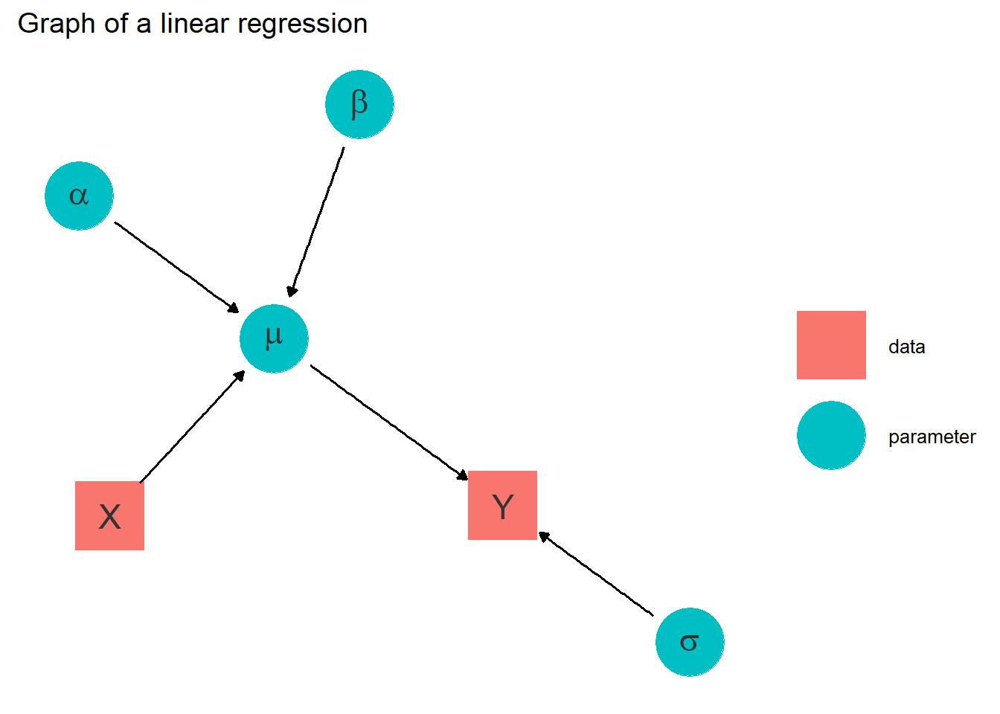
In the DAG above, squares represent data and circles represent parameters. Directions of arrows indicate dependence. In a Bayesian model, all root node parameters (those with no arrows pointing towards them) need priors to be specified: \[ \alpha \sim Normal(mean=0, sd=1000)\] \[ \beta \sim Normal(mean=0, sd=1000)\] \[ \sigma \sim Uniform(min=0, max=1000)\]
These are examples of weakly informative priors, because the variances are large relative to the data. Weakly informative priors should not have any noticeable influence on the final parameter estimates.
6.2.3 How to choose priors
To identify a distribution to use for priors, ask yourself: 1. “What values are possible for this parameter?” and 2. “How certain am I about it?”.
In most of Bayesian analyses, we generally know what our data do and do not look like such that we can build priors that reflect the properties of potential datasets. Defining such priors consists of indicating what is the likely range of values for our parameters and downweighting out-of-range values. Furthermore if we are uncertain about the range we can increase the variability of the priors (through their scale/variance parameter), because we don’t want the priors to influence too much the posteriors.
Regression coefficients are generally continuous numbers that can take values from -∞ to +∞. The normal distribution is a good choice of prior for these parameters because it has the same characteristics.
Standard deviations are continuous numbers that must be positive. A normal distribution is not a good choice for this prior because it includes negative numbers. The simplest is a uniform(0,a) with a defining the upper bound on likely values. In reality this is not perfect as it enforces a hard constraint. Other distributions can be considered as a half-Normal or a half-Cauchy distribution.
The bayesrules book has a very good chapter on the interaction between priors and data. The stan team put together interesting guidelines
to prior setting.
6.2.4 Simulating data
We will simulate fake observations to introduce the basic concepts
of Bayesian modelling and their implementation in stan.
We produce our fake data as 1000 draws of a Normal distribution with mean 5 and standard deviation 50:
# 2 Simulated data ----
# Simulate data
seed <- 2004
set.seed(seed)
data <- tibble(y=rnorm(1e3, mean= 5, sd=50))Note that we define a seed for the results to be exactly replicated.
The observed distribution of our simulated data is the following:
# plot simulated data
ggplot(data, aes(x=y))+
geom_histogram(bins = 50)+
theme_minimal()+
geom_vline(xintercept = mean(data$y), color='orange', linewidth=1)+
annotate('text', x=15, y=30, label=paste0('Observed mean: ', round(mean(data$y),2)), colour='orange', angle=90)+
geom_segment(x=0,y=1, xend=sd(data$y), yend=1, colour='orange', linewidth=1)+
annotate('text', x=50, y=4, label=paste0('Observed sd: ', round(sd(data$y),2)), colour='orange')+
labs(y='', x='observed y')+
theme(axis.text.y = element_blank())Figure 6.1: Simulated observations distribution
6.2.5 Modelling the data
Let’s pretend we don’t know how the observations, \(y\) have been created. We want to model \(y\) and we see that it has a clear bell shape. It can thus be approximated with a Normal distribution that is: \[Y \sim Normal(mean=\mu, sd=\sigma)\]
The corresponding DAG is:
# Normal model DAG
dagify(
Y ~ mu,
Y ~ sigma) %>%
tidy_dagitty(seed=41) %>%
mutate(color=c('parameter', 'data','parameter')) %>%
ggplot(aes(x = x, y = y, xend = xend, yend = yend, color=color,shape=color)) +
geom_dag_point() +
geom_dag_edges() +
geom_dag_text(col = "grey20",size=6, parse=T) +
scale_shape_manual(values=c(15,19))+
theme_dag()+ labs(title = 'Model with simulated data: Normal distribution of Y', color='', shape='')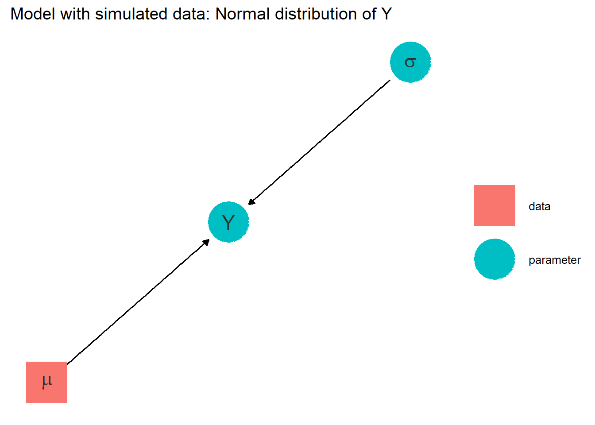
We need to give some prior to the two parameters \(\mu\) the mean and \(\sigma\) the standard deviation. Let’s imagine that we don’t have access to more information on the variable \(Y\) than its manifestation in our dataset.
We can guess that \(\mu\) is around zero but without great confidence (see Figure 6.1). In other words, we can assume that \(\mu\) can be drawn from a Normal(0,100).
# define mu prior
data$prior_mu <- rnorm(1e3, mean= 0, sd=100)
ggplot(data)+
geom_histogram(aes(x=y, after_stat(density)), bins=50, fill='grey30')+
geom_density(aes(x=prior_mu), colour='#00BFC4', linewidth=1)+
theme_minimal()+
annotate('text', y=0.0020, x=250, label=paste0('Normal(0,100)'), colour='#00BFC4', size =5)+
theme(axis.text.y = element_blank())+
labs(y='', x='observed y')Figure 6.2: Mu prior distribution
Figure 6.2 shows what our prior for \(\mu\) means: we think that \(\mu\) is likely to be around zero but could be up to 200. Given that our observed \(y\), \(\hat{y}\), has no occurrences above 200, it is unlikely that the mean of \(y\) is 200 but we don’t exclude the possibilty. However we do consider that 0 is more likely than 200.
For \(\sigma\), we have stricter expectations. Indeed standard deviations are positive. We thus choose as prior for \(\sigma\) a Uniform(0, 200).
# define sigma prior
data$prior_sigma <- runif(1e3,min = 0, max = 200)
ggplot(data)+
geom_histogram(aes(x=y, after_stat(density)), bins=50, fill='grey30')+
geom_density(aes(x=prior_sigma), colour='#00BFC4', linewidth =1, trim=T)+
theme_minimal()+
annotate('text', y=0.0060, x=150, label=paste0('Uniform(0,200)'), colour='#00BFC4', size=5)+
theme(axis.text.y = element_blank())+
labs(y='', x='observed y')Figure 6.3: Sigma prior distribution
Figure 6.3 shows that a uniform prior means a equal probability of \(\sigma\) to be 0 as to be 200.
The final model is:
\[\begin{equation} Y \sim Normal( \mu, \sigma ) \\[1pt] \\ \mu \sim Normal( 0, 100 ) \\ \sigma \sim Uniform( 0, 200 )\tag{6.2} \end{equation}\]6.2.6 Implementing the model in stan
To estimate \(\mu\) and \(\sigma\), we will write our first model in stan.
// Model for simulated data: y as normal distribution
data {
int<lower=0> n; // number of observations
real y[n]; // observations
}
// The parameters accepted by the model. Our model
// accepts two parameters 'mu' and 'sigma'.
parameters {
real mu;
real<lower=0> sigma;
}
// The model to be estimated. We model the output
// 'y' to be normally distributed with mean 'mu'
// and standard deviation 'sigma'.
model {
y ~ normal(mu, sigma);
mu ~ normal(0,100);
sigma ~ uniform(0,200);
}A stan model is composed of code blocks. The fundamental ones are:
the data block that describes the input data to the model
the parameters block that describes the parameters to be estimated
the model block that describes the stochastic elements: (1) the interaction between the parameters and the data, (2) the prior distribution
The stan software requires us to declare all variables, both parameters and data, with their type (int, real) and size (as indicated with [n]). It is possible to incorporate constraints on the variable support, e.g. it is not possible to have a negative \(\sigma\) (real<lower=0> sigma). More details here.
Note: stan requires to leave one blank line at the end of the script. We will store the model in a stan file called tutorial1_model.stan
in the tutorial1 folder.
6.2.7 Preparing the data for stan
Stan software takes as input a list of the observed data that defines
the variables indicated on the data block.
6.2.8 Running the model
We set up the parameters of the Markov Chain algorithm.
The chains argument specified the number of Markov chains to run simultaneously. We want the Markov chains to replicate a fully random process. However, the design of the chain algorithm makes every sample dependant on the previous sample. To recreate a random setting we run independently several chains to explore the parameter space and that hopefully converge to the same consistent solution.
The warmup parameter is the number of samples at the beginning of the estimation process that we discard from the results. This is similar to cooking pancakes in the sense that you need the algorithm to warm up before nearing reasonable values.
The iter parameter specifies the number of iterations, that is the length of the Markov chain. The longer the chain the more likely it is to stabilize around the correct estimate.
Then we define the parameters that we want to monitor, which are stored during the estimation process:
And we are ready to run the model!
6.2.9 Checking the MCMC simulations
We check the Markov chains to see if they converged to a unique solution. It can be visualized with a traceplot for the two parameters, \(\mu\) and \(\sigma\). A traceplot describes the evolution of the parameter estimation across the Markov chain iterations. A good traceplot sees the mixing of the different chains, evidence of convergence to a single estimate.
Figure 6.4: Model Traceplot
Figure 6.4 shows both the warm-up period (up until 250) and the following iterations. We see that convergence happened before the end of the warm-up period and is stable over the iterations, because the four chains mixed well.
From Figure 6.4 (and the absence of warning from stan ), we can conclude that the model converged.
6.2.10 Evaluating the estimated parameters
Bayesian statistics consider parameters as stochastic, thus it estimates a distribution for each parameter. In practice stan stores parameters estimates for each iteration post-warmup for each chain which gives us 500x4 estimates of the posterior distribution.
We can extract from the stanfit object a summary of the estimated distribution using the summary function:
# summarise estimated parameters
estimated <- summary(fit, pars=pars)$summary
estimated %>% kbl() %>% kable_minimal()| mean | se_mean | sd | 2.5% | 25% | 50% | 75% | 97.5% | n_eff | Rhat | |
|---|---|---|---|---|---|---|---|---|---|---|
| mu | 7.585318 | 0.0397414 | 1.556887 | 4.518311 | 6.53370 | 7.607114 | 8.649467 | 10.59326 | 1534.718 | 0.9998234 |
| sigma | 49.668592 | 0.0246272 | 1.126673 | 47.452121 | 48.91305 | 49.688114 | 50.404291 | 51.91864 | 2092.976 | 1.0003155 |
We can then compare the parameters \(\hat\mu\) and \(\hat\sigma\) with the observed average and standard deviation of \(\hat{y}\) as well as the true value, using the stan_plot function.
# plot estimated parameters
mean_pop <- mean(data$y)
sd_pop <- sd(data$y)
mu_plot <- stan_plot(fit, 'mu',fill_color='orange')+
annotate('segment',x=mean_pop, xend=mean_pop,
y=0.7, yend=1.2,col='grey40', size=1)+
annotate('text',x=mean_pop,
y=1.5, col='grey40',label= paste0('Observed\n',round(mean_pop,2)), fontface =2, size=4.5)+
annotate('segment',x=5, xend=5,
y=0.7, yend=1.2,col='grey10', size=1)+
annotate('text',x=5,
y=1.5, col='grey10',label= paste0('True\n',5), fontface =2, size=4.5)+
annotate('text',x=estimated['mu', 'mean'],
y=1.5, col='orange',label= paste0('Estimated\n',round(estimated['mu', 'mean'],2)), fontface =2, size=4.5)
sigma_plot <- stan_plot(fit, 'sigma', fill_color='orange')+
annotate('segment',x=sd_pop, xend=sd_pop,
y=0.7, yend=1.2,col='grey40', size=1)+
annotate('text',x=sd_pop,
y=1.5, col='grey40',
label= paste0('Observed\n', round(sd_pop,2)), fontface =2, size=4.5)+
annotate('segment',x=50, xend=50,
y=0.7, yend=1.2,col='grey10', size=1)+
annotate('text',x=50,
y=1.5, col='grey10',label= paste0('True\n',50), fontface =2, size=4.5)+
annotate('text',x=estimated['sigma', 'mean'],
y=1.5, col='orange',label= paste0('Estimated\n',round(estimated['sigma', 'mean'],2)), fontface =2, size=4.5)
gridExtra::grid.arrange(mu_plot, sigma_plot, nrow=2)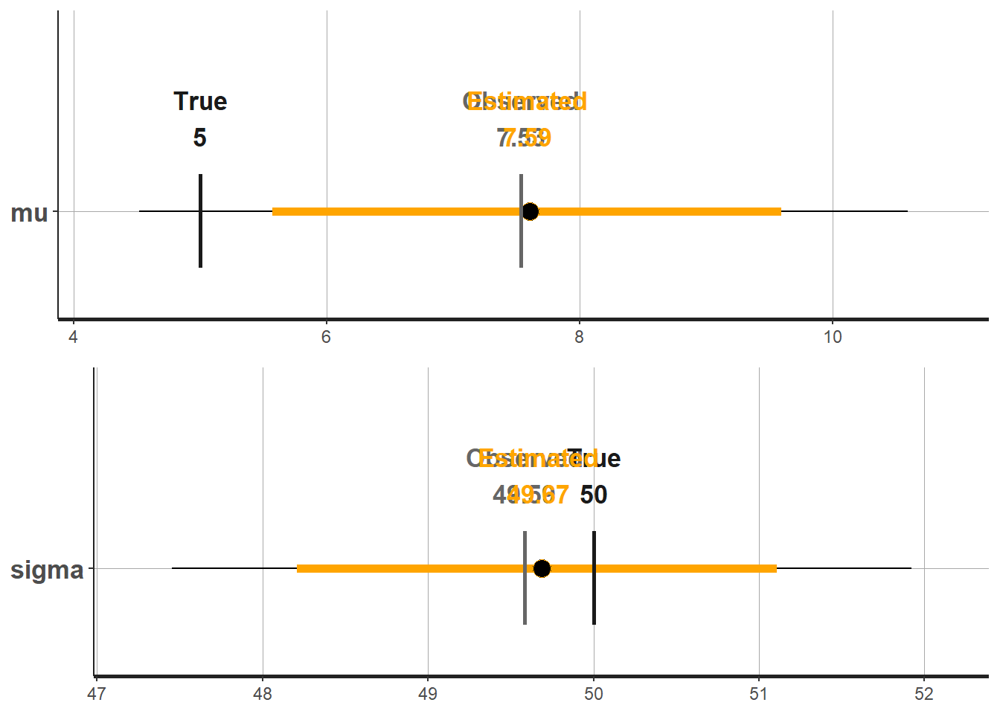
We see that (1) the observed mean and standard deviation are within the 95% credible intervals of the estimated parameters, (2) the true mean and standard deviation are within the 95% credible intervals of the estimated parameters,
The model structure is inline with the observed data and manages to approximate the true data generating process.
6.2.11 Let’s try with real data
This section of the tutorials will cover actual population modelling using sample data for Nigeria. Let’s download the data we will be modelling. It belongs to the supplementary material of the seminal paper describing WorldPop bottom-up population models (Leasure et al. 2020f).
6.2.12 The data
The data consist of household surveys that collected information on the total population in 1141 clusters in 15 of 37 states in Nigeria during 2016 and 2017. Clusters varied slightly in size, but were all approximately 3 hectares. These clusters were randomly sampled locations whose boundaries were drawn based on high resolution satellite imagery. The surveys are further described in Leasure et al. (2020f) and Weber et al. (2018c). Survey site locations are shown in Figure 6.5.
Figure 6.5: Microcensus surveys mapped as the number of survey locations within a 20km grid cell. Region groupings are shaded and numbered R1 - R11. Source: Leasure et al. (2020).
The map in Figure 6.5 shows some key characteristics of the stratified-random sample design:
Only some states were sampled
But at least 1 state per “region” was sampled
Within states, locations were randomly sampled within settlement types
Let’s look at the table attributes:
#load data
data <- readxl::read_excel(here("dat/BUM_tutorial/nga_demo_data.xls"))
# create unique cluster id
data <- data %>%
mutate(
id= paste0('cluster_',(1:n())), # compute cluster id
pop_density = N/A # compute population density
)
data %>% dplyr::select(id,N, A) %>% head(10) %>% kbl() %>% kable_minimal()| id | N | A |
|---|---|---|
| cluster_1 | 547 | 3.036998 |
| cluster_2 | 803 | 2.989821 |
| cluster_3 | 750 | 3.078278 |
| cluster_4 | 281 | 3.019307 |
| cluster_5 | 730 | 3.025204 |
| cluster_6 | 529 | 3.090072 |
| cluster_7 | 505 | 3.007513 |
| cluster_8 | 402 | 3.019307 |
| cluster_9 | 388 | 3.202116 |
| cluster_10 | 900 | 3.054689 |
Each row is a survey site, with population counts (N) and the settled area (A) in hectares.
6.2.13 Response variable: the population count
We want to model the distribution of population count at each survey site:
# plot population count
ggplot(data, aes(x=N))+
geom_histogram(bins=50)+
theme_minimal()+
theme(axis.text.y = element_blank())+
labs(title = "", y='', x='Observed population count')+
geom_vline(xintercept = mean(data$N), color='orange', size=1)+
annotate('text', x=500, y=25, label=paste0('Observed mean: ', round(mean(data$N))), colour='orange', angle=90)Figure 6.6: Observed population count distribution at survey sites
Note the wide variation in population count per survey site, with a maximum of 2370 people.
6.2.14 Modelling Population count: a Poisson distribution
Population count is by definition a discrete, positive variable. A good distribution candidate is the Poisson distribution.
\[ population \sim Poisson( \lambda ) \] The corresponding DAG shows the interaction between the population count and the model parameter:
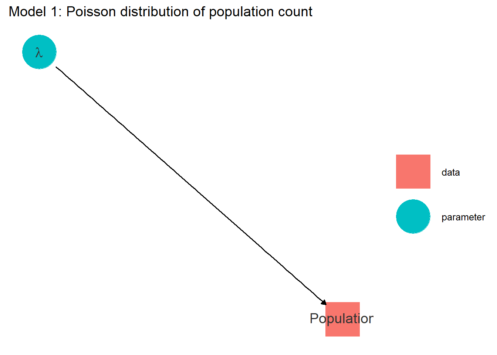
We then have to define the prior for \(\lambda\), which corresponds to the mean of the Poisson distribution. We will choose a relatively uninformed prior based on our understanding of the data. We know that the mean observed population count is around 450 per cluster. We set up the prior for \(\lambda\) to follow a Uniform between 0 and 3000 to ensure a positive parameter while reducing the information given to the estimation process, and thus the bias introduced.
# define lambda prior
data$prior_lambda <- runif(nrow(data), min=0, max=3000)
ggplot(data)+
geom_histogram(aes(x=N, after_stat(density)), bins=50, fill='grey30')+
geom_density(aes(x=prior_lambda), colour='#00BFC4', size=1)+
theme_minimal()+
annotate('text', y=0.0005, x=2000, label=paste0('Uniform(0,3000)'), colour='#00BFC4', size=5)+
theme(axis.text.y = element_blank())+
labs(y='', x='Observed population count')Figure 6.7: Lambda prior distribution
The final model is:
\[\begin{equation} population \sim Poisson( \lambda ) \\ \\ \lambda \sim Uniform( 0, 3000 )\tag{6.3} \end{equation}\]6.2.15 Implementing the model
To estimate \(\lambda\), we will write our first population model in stan.
// Model 1: Population count as a Poisson distribution
data{
int<lower=0> n; // number of microcensus clusters
int<lower=0> population[n]; // count of people
}
parameters{
// rate
real<lower=0> lambda;
}
model{
// population totals
population ~ poisson(lambda);
// rate
lambda ~ uniform(0, 3000);
}We declare the input variable population as integer because our population data are counts and set it up to be positive. We define \(\lambda\) as a positive real. We store this model under tutorial1_model1.stan.
6.2.16 Estimating the model
We prepare the data for stan:
We keep the same parameters as previously for the Markov Chain algorithm and declare \(\lambda\) as the parameter to monitor
And we are ready to run the model!
# mcmc
fit <- rstan::stan(file = file.path('dat/BUM_tutorial/tutorial1_model1.stan'),
data = stan_data,
iter = warmup + iter,
chains = chains,
warmup = warmup,
pars = pars,
seed = seed)The traceplot shows a model that converges to the observed mean:
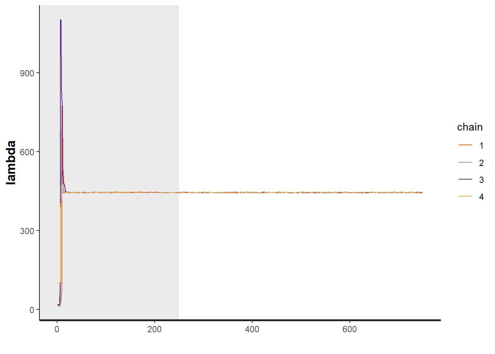
Note the wide variation at the start of the estimation. This is due to the uniform prior for \(\lambda\) declaring that any value between 0 and 3000 is similarly possible.
6.2.18 Estimated parameters
We plot the estimated parameter \(\hat\lambda\) to see how it compares with the observed average population count.
# plot estimated parameters
mean_pop <- mean(data$N)
stan_plot(fit, 'lambda',fill_color='orange')+
annotate('segment',x=mean_pop, xend=mean_pop,
y=0.7, yend=1.2,col='grey40', size=1)+
annotate('text',x=mean_pop,
y=1.5, col='grey40',label= paste0('Observed average\n',round(mean_pop,2)), fontface =2, size=4.5)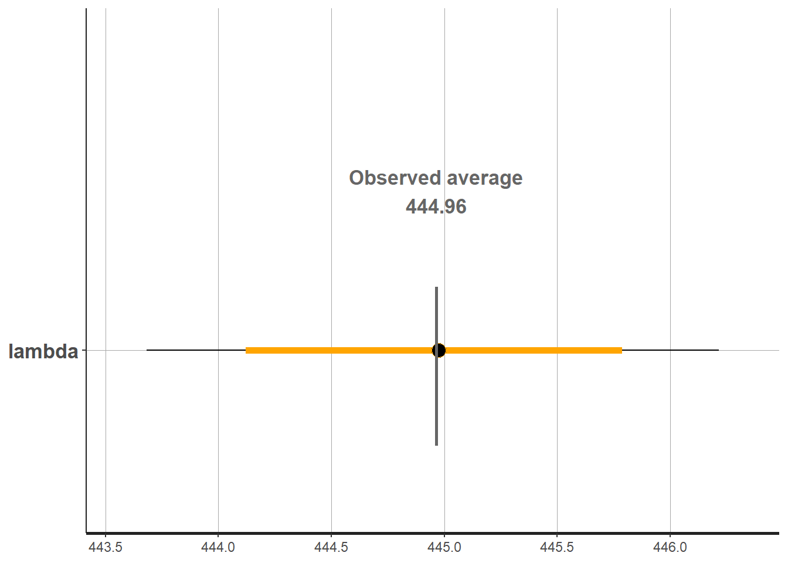
The estimated mean is very close to the observed mean.
6.2.19 Predicted population count
To see if the model is coherent with the observations, we can compute the predicted population count for every survey site. It is part of posterior predictive checking which is based on the following idea: if a model is a good fit then we should be able to use it to generate data that looks a lot like the data we observed.
It is possible in stan to do it as part of the estimation process through the generated quantities block .
// Model 1bis: Population count as a normal distribution with integrated predictions
...
generated quantities{
real population_hat[n];
for(idx in 1:n){
population_hat[idx] = poisson_rng( lambda );
}
}We define the parameter population_hat as a draw (as represented by the suffix rng for random number generator) from a Poisson distribution with the estimated \(\hat\lambda\) for each iteration.
We run the model stored under tutorial1_model1bis.stan:
pars <- c('lambda', 'population_hat')
# mcmc
fit_model1 <- rstan::stan(file = file.path('dat/BUM_tutorial/tutorial1_model1bis.stan'),
data = stan_data,
iter = warmup + iter,
chains = chains,
warmup = warmup,
pars = pars,
seed = seed)And extract the predicted population count.
# extract predictions
predicted_pop_model1 <- as_tibble(extract(fit_model1, 'population_hat')$population_hat)
colnames(predicted_pop_model1) <- data$idWe obtain a table with 500 predictions * 4 chains for each survey site.
predicted_pop_model1 %>%
mutate(iteration= paste0('iter_', 1:(iter*chains))) %>%
select(iteration, 1:10) %>% head(10) %>% kbl() %>% kable_minimal()| iteration | cluster_1 | cluster_2 | cluster_3 | cluster_4 | cluster_5 | cluster_6 | cluster_7 | cluster_8 | cluster_9 | cluster_10 |
|---|---|---|---|---|---|---|---|---|---|---|
| iter_1 | 449 | 433 | 453 | 458 | 405 | 480 | 480 | 453 | 450 | 433 |
| iter_2 | 443 | 421 | 455 | 472 | 437 | 469 | 457 | 417 | 434 | 441 |
| iter_3 | 430 | 431 | 453 | 431 | 476 | 424 | 436 | 438 | 478 | 476 |
| iter_4 | 414 | 428 | 453 | 451 | 459 | 476 | 459 | 420 | 413 | 419 |
| iter_5 | 452 | 441 | 426 | 427 | 439 | 447 | 476 | 460 | 398 | 423 |
| iter_6 | 426 | 422 | 426 | 413 | 454 | 410 | 480 | 454 | 447 | 428 |
| iter_7 | 459 | 432 | 446 | 444 | 432 | 430 | 433 | 444 | 432 | 452 |
| iter_8 | 459 | 463 | 413 | 434 | 424 | 448 | 405 | 449 | 455 | 428 |
| iter_9 | 402 | 400 | 465 | 467 | 411 | 411 | 432 | 448 | 413 | 455 |
| iter_10 | 426 | 413 | 458 | 451 | 464 | 462 | 446 | 425 | 464 | 466 |
We get thus a posterior prediction distribution of population count for every survey site. Figure 6.8 shows a posterior distribution for the first survey site.
# plot posterior prediction for one cluster
ggplot(predicted_pop_model1, aes(x=cluster_1))+
geom_density(size=1.5, color='orange')+
theme_minimal()+
theme(axis.text.y = element_blank())+
labs(title = "Population prediction for cluster 1 ", y='', x='')Figure 6.8: Example of posterior prediction distribution for one cluster
We can extract for every survey site its mean prediction and 95% credible interval.
# summarize predictions
comparison_df <- predicted_pop_model1 %>%
pivot_longer(everything(),names_to = 'id', values_to = 'predicted') %>%
group_by(id) %>%
summarise(across(everything(), list(mean=~mean(.),
upper=~quantile(., probs=0.975),
lower=~quantile(., probs=0.025))))
comparison_df %>% head() %>% kbl() %>% kable_minimal()| id | predicted_mean | predicted_upper | predicted_lower |
|---|---|---|---|
| cluster_1 | 445.1085 | 488.000 | 402.000 |
| cluster_10 | 445.0675 | 488.000 | 404.000 |
| cluster_100 | 445.1840 | 487.025 | 404.975 |
| cluster_1000 | 445.6165 | 484.000 | 403.000 |
| cluster_1001 | 445.2855 | 487.000 | 404.975 |
| cluster_1002 | 444.4365 | 486.000 | 403.000 |
We note that all predictions are very similar. The model includes only one parameter — lambda — and the site-level predictions do not account for any site-level characteristics. Therefore, predictions at each site are drawn from the exact same distribution. Let’s see the global picture by plotting the observed vs the predicted population count. A perfect model would see all points on the 1:1 line.
# add observed values
comparison_df <- comparison_df %>%
left_join(data %>%
select(id, N), by = 'id')
# plot predicted vs observed
ggplot(comparison_df) +
geom_pointrange(aes(x=N, y=predicted_mean, ymin=predicted_lower, ymax=predicted_upper
),
fill='grey50', color='grey70', shape=21
)+
geom_abline(slope=1, intercept = 0, color='orange', size=1)+
theme_minimal()+
labs(title = '', x='Observed population count', y='Predicted population')Figure 6.9: Comparison between observed and predicted population count (with the Poisson model). Orange line indicates the 1:1 line
Figure 6.9 is a great visualization of the prediction process. Since the model has no covariates (introduced in tutorial 3) and no hierarchical structure (introduced in tutorial 2), there is no subnational variation introduced. Furthermore the credible intervals entail few observations: few grey lines intersect the orange line. This indicates issues with the modelling.
We can compute goodness-of-fit metrics to complete the picture:
The bias, the mean of the residuals (prediction - observation)
The imprecision, standard deviation of the residual
The inaccuracy, mean of the absolute residuals
The proportion of observations falling into the predicted credible interval
# compute goodness-of-fit metrics
comparison_df %>%
mutate(residual = predicted_mean-N,
in_CI = ifelse(N>predicted_lower &N<predicted_upper, T, F)) %>%
summarise(
`Bias`= mean(residual),
`Imprecision` = sd(residual),
`Inaccuracy` = mean(abs(residual)),
`Correct credible interval (in %)` = round(sum(in_CI)/n()*100,1)
) %>%
kbl(caption = "Poisson model goodness-of-fit metrics") %>% kable_minimal()| Bias | Imprecision | Inaccuracy | Correct credible interval (in %) |
|---|---|---|---|
| 0.0293225 | 315.8384 | 230.9604 | 10 |
Table 6.1 confirms that the model is incorrectly specified: only 10% of the observations falls in their credible intervals.
This limitation is due to the impossibility to model overdispersion within a Poisson framework. Indeed \(\lambda\) defines both the mean and the variance of a Poisson variable.
A source of overdispersion comes from the size of the clusters. We observed population counts for units with different area, in particular different sizes of settled areas as shown in Figure 6.10.
#plot overdispersion
ggplot(data, aes(x=A, y=N))+
geom_point()+
theme_minimal()+
labs(x='Settled area in hectares', y='Population count')Figure 6.10: Scatterplot contrasting population count with settled area for every cluster
6.2.20 Modelling Population count: a Poisson Lognormal model
To incorporate overdispersion in our model, we decompose population count as follows:
\[ population = pop\_density * settled\_area \] The left hand side of the equation is population, a discrete observed variable, whereas the right hand side is composed of two continuous variables, settled_area the settled area, an observed variable, and pop_density, the population density, a latent variable.
6.2.21 Writing the model
Formally we can rewrite Equation (6.3) as:
\[ population \sim Poisson( pop\_density * settled\_area) \] This formulation unveils the continuous positive scale-free latent variable, pop_density that can be modelled with its own distribution.
We opt for a Lognormal which is a continuous probability distribution of a random variable whose logarithm is normally distributed. It is characterised by a positive distribution skewed to the right. The lognormal has two parameters, \(\mu\), its location parameter that defines its median and \(\sigma\) its scale parameter that defines its geometric standard deviation. This model allows us to capture overdispersion through \(\sigma\).
Figure 6.11: Probability distribution functions of log-normal distributions Source: Krishnavedala, CC0, via Wikimedia Commons
Applied to our population modelling it gives us:
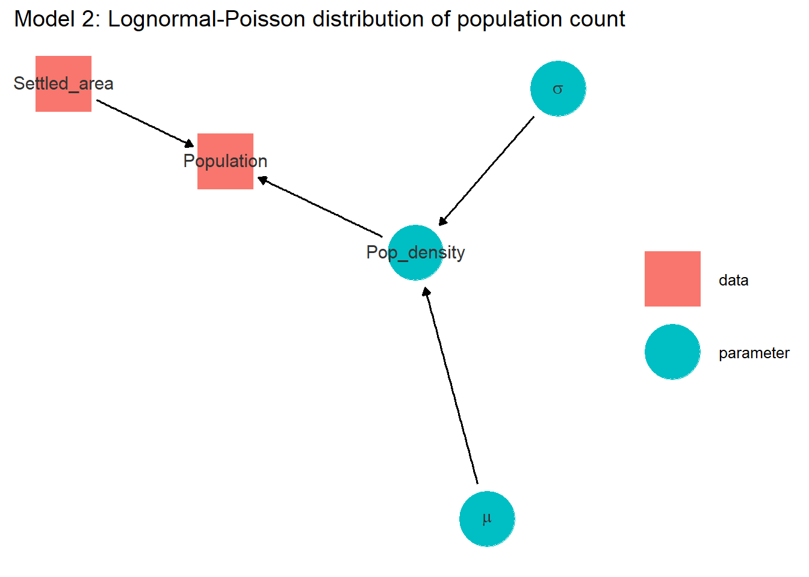
And in formal modelling:
\[\begin{equation} population \sim Poisson( pop\_density * settled\_area) \\ pop\_density \sim Lognormal( \mu, \sigma) \end{equation}\]Note that this equation is equivalent to:
\[\begin{equation} log(pop\_density) \sim Normal( \mu, \sigma) \end{equation}\]Under this form we see that the model is not linear, but log-linear. It can be rewritten as:
\[\begin{equation} pop\_density \sim exp(Normal( \mu, \sigma)) \end{equation}\]6.2.22 Defining the priors
In the Lognormal, there are two parameters, \(\mu\) that represents the median of the population density on the log scale, and \(\sigma\) the geometric standard deviation of population density on the log scale. We set up their priors similarly as before and retrieve from the data that the log observed median of the population density is 4.82 and the observed log geometric standard deviation is0.87.
We choose as prior for \(\mu\) a Normal(5,4):
# 5 Model2: Lognormal ----
# define prior for mu
data$prior_mu <- rnorm(nrow(data), mean= 5, sd=4)
ggplot(data)+
geom_histogram(aes(x=log(pop_density), after_stat(density)), bins=100, fill='grey30')+
geom_density(aes(x=prior_mu), colour='#00BFC4', size=1)+
theme_minimal()+
annotate('text', y=0.1, x=15, label=paste0('Normal(5,4)'), colour='#00BFC4', size=5)+
geom_vline(xintercept = median(log(data$pop_density)), color='orange', size=1)+
annotate('text', x=5.1, y=0.3, label=paste0('Observed median: ', round(median(log(data$pop_density))), 2), colour='orange', angle=90)+
theme(axis.text.y = element_blank())+
labs(y='', x='Observed population density (log)')+
xlim(-8,17)Figure 6.12: Prior distribution for mu
We choose as prior for \(\sigma\) a Uniform(0,4)
# define prior for sigma
data$prior_sigma <- runif(nrow(data), min = 0, max=4)+5
ggplot(data)+
geom_histogram(aes(x=log(pop_density), after_stat(density)), bins=100, fill='grey30')+
geom_density(aes(x=prior_sigma), colour='#00BFC4', size=1, trim=T)+
theme_minimal()+
annotate('text', y=0.3, x=7.7, label=paste0('Uniform(0,4)'), colour='#00BFC4', size=5)+
theme(axis.text.y = element_blank())+
labs(y='', x='Observed population density (log)')Figure 6.13: Prior distribution for mu
The resulting model can be written as follows:
\[\begin{equation} population \sim Poisson( pop\_density * settled\_area) \\ pop\_density \sim Lognormal( \mu, \sigma) \\ \\ \mu \sim Normal( 5, 4 ) \\ \sigma \sim Uniform( 0, 4 )\tag{6.4} \end{equation}\]6.2.23 Implementing the model
We adapt the stan code to the model change which affects all code
blocks:
// Model 2: Population count as a Poisson-Lognormal distribution
data{
int<lower=0> n; // number of microcensus clusters
int<lower=0> population[n]; // count of people
vector<lower=0>[n] area; // settled area
}
parameters{
// population density
vector<lower=0>[n] pop_density;
// intercept
real mu;
// variance
real<lower=0> sigma;
}
model{
// population totals
population ~ poisson(pop_density .* area);
pop_density ~ lognormal( mu, sigma );
// intercept
mu ~ normal(5, 4);
// variance
sigma ~ uniform(0, 4);
}
generated quantities{
int<lower=0> population_hat[n];
real<lower=0> density_hat[n];
for(idx in 1:n){
density_hat[idx] = lognormal_rng( mu, sigma );
population_hat[idx] = poisson_rng(density_hat[idx] * area[idx]);
}
}Note that we need to use the vector format for area and pop_density.
This formatting is implied by definition of the multiplication operation for the Poisson rate.
We store the model under tutorial1_model2.stan, and prepare the
corresponding data:
# prepare data for stan
stan_data_model2 <- list(
population = data$N,
n = nrow(data),
area = data$A)Note that the population density is not an input data of the model, but an unobserved latent variable that we model through the Lognormal.
Then we declare the parameters to monitor (including density_hat) and
run the model.
# set parameters to monitor
pars <- c('mu','sigma', 'population_hat', 'density_hat')
# mcmc
fit_model2 <- rstan::stan(file = file.path('dat/BUM_tutorial/tutorial1_model2.stan'),
data = stan_data_model2,
iter = warmup + iter,
chains = chains,
warmup = warmup,
pars = pars,
seed = seed)No warnings are shown.
Question: Can you plot the traceplot and interpret it?
Click for the solution
We plot the traceplot:
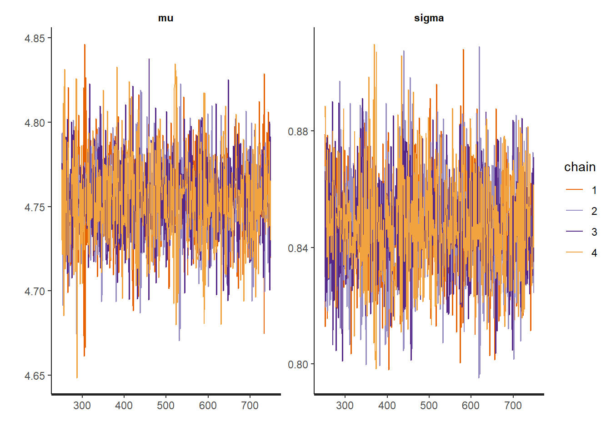
We see that the chains have mixed well and that the posterior distributions of the parameters are not constrained by their prior specification.
We plot the predicted density and the predicted count against the observations:
# extract posterior predictions
predicted_pop_model2 <- as_tibble(extract(fit_model2, 'population_hat')$population_hat)
predicted_dens_model2 <- as_tibble(extract(fit_model2, 'density_hat')$density_hat)
colnames(predicted_pop_model2) <- data$id
colnames(predicted_dens_model2) <- data$id
# summarise posterior predictions
comparison_df <- rbind(predicted_dens_model2 %>%
pivot_longer(everything(),names_to = 'id', values_to = 'predicted') %>%
group_by(id) %>%
summarise(across(everything(), list(mean=~mean(.),
upper=~quantile(., probs=0.975),
lower=~quantile(., probs=0.025)))) %>%
mutate(source= 'Poisson-Lognormal model',
type= 'Population density') %>%
left_join(data %>%
select(id, pop_density)%>%
rename(reference=pop_density), by = 'id'),
predicted_pop_model2 %>%
pivot_longer(everything(),names_to = 'id', values_to = 'predicted') %>%
group_by(id) %>%
summarise(across(everything(), list(mean=~mean(.),
upper=~quantile(., probs=0.975),
lower=~quantile(., probs=0.025)))) %>%
mutate(source= 'Poisson-Lognormal model',
type='Population count') %>%
left_join(data %>%
select(id, N) %>%
rename(reference=N), by = 'id'))
# plot posterior predictions
ggplot(comparison_df %>%
mutate(type= factor(type, levels=c('Population density', 'Population count')))) +
geom_pointrange(aes(x=reference, y=predicted_mean, ymin=predicted_lower, ymax=predicted_upper
),
fill='grey50', color='grey70', shape=21
)+
geom_abline(slope=1, intercept = 0, color='orange', size=1)+
theme_minimal()+
labs(title = '', x='Observations', y='Predictions')+
facet_wrap(.~type, scales = 'free')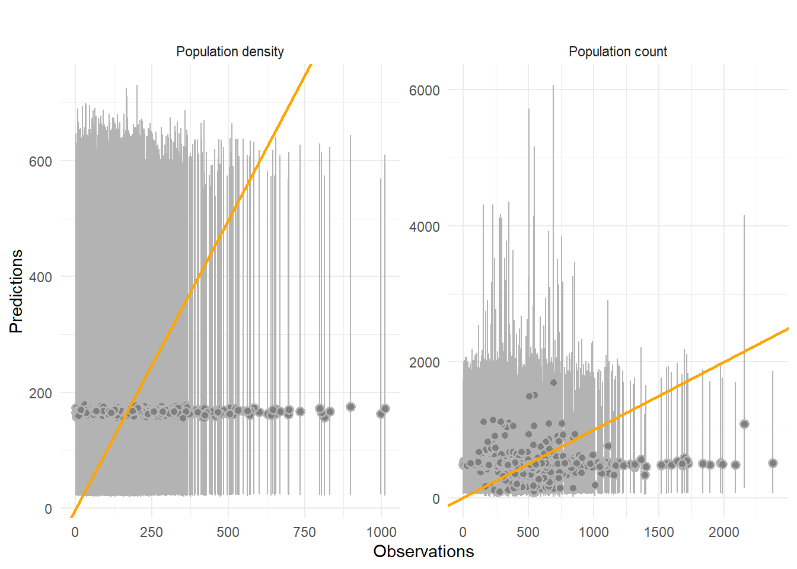
We see for the population_density the same estimation pattern as in
the Poisson model, that is a similar mean posterior prediction
distribution for every survey sites. In contrast, the length of the confidence intervals
varies between cluster predictions due to the variance term in the Lognormal.
Furthermore the predicted population_count
is influenced by the varying settled_area.
We use the same metrics based on residuals to assess the goodness-of-fit of the model.
# compute goodness-of-fit metrics
comparison_df %>%
filter(type=='Population count') %>%
mutate(residual = predicted_mean-reference,
in_CI = ifelse(reference>predicted_lower &reference<predicted_upper, T, F)) %>%
summarise(
`Bias`= mean(residual),
`Imprecision` = sd(residual),
`Inaccuracy` = mean(abs(residual)),
`Correct credible interval (in %)` = round(sum(in_CI)/n()*100,1)
) %>%
kbl(caption = "Poisson-Lognormal model goodness-of-fit metrics") %>% kable_minimal()| Bias | Imprecision | Inaccuracy | Correct credible interval (in %) |
|---|---|---|---|
| 61.10768 | 337.3459 | 265.2585 | 95.3 |
The proportion of observations that fall in their credible intervals shows a well-behaved model: 95.5% of the observations falls in the 95% credible interval. On average the model overestimates the population count by around 60 people, but this statistic varies on average by 337 people.
No variations are included in this model: we built a national model of population count. It will require further refinements that will be introduced in the next tutorials.
And for that purpose we will store this last model as a RDS file.
6.3 Part II: How to model large-scale spatial variation
In Part I, we modelled population count with a Poisson-Lognormal model. This modelling does not include site-level variations of population count. Part II will explore the spatial patterns of population counts and how they are clustered across space.
We will analyse the grouping of our observations and unravel their hierarchical structure. We will then see how Bayesian models offer a great modelling toolbox to represent hierarchical data. We will finally try different hierarchical modelling structures to see which one fits our data best. Hierarchical models define a complex parameter space. We will thus revise the prior setting to account for the complexity.
6.3.1 Goals
- Understand the concept of grouped observations
- Estimate population density in a no-pooling framework
- Estimate population density in a partial pooling framework
- Integrate additional hierarchical level to the modelling
6.3.2 Supporting readings
An Introduction to Hierarchical Modeling by Michael Freeman. Great visualisation of grouped data and goals of general hierarchical modelling
Bayes rules! on hierarchical model by Alicia A. Johnson, Miles Ott, Mine Dogucu. Good explanation of hierarchical modelling in
stanwith many examplesExchangeability and hierarchical models in Bayesian Data Analysis (p.104) by Andrew Gelman, John Carlin, Hal Stern, Donald Rubin, David Dunson, and Aki Vehtari
6.3.3 Extra packages
We will use the bayesplot package that offers more flexibility in evaluating Bayesian estimations and plotly for interactive plotting.
install.packages('bayesplot') # additional evaluations of stan models
install.packages('plotly') # interactive plot
install.packages("RColorBrewer")Vignettes can be found here: bayesplot and plotly.
# 1 Set-up ----
# load libraries
library(tidyverse) # managing data
library(ggdag) # drawing DAG
library(kableExtra) # visualising table
library(here) # handling path
library(rstan) # running Bayesian models
library(plotly) # interactive plot
library(RColorBrewer) # colours
# stan setup
options(mc.cores = parallel::detectCores()-1)
rstan::rstan_options(auto_write = TRUE) # speed up running time of compiled model
knitr::opts_chunk$set(fig.align = "center") 6.3.4 Hierarchical structure in the data
We are still working with the Nigeria population dataset we downloaded in Part I. Let’s unravel the clustering patterns in population counts. Figure 6.14 shows the spatial variation of population density across Nigeria. We choose to represent the population density (people/settled hectares) because it is more comparable across survey sites.
We can observed clustered patterns such as high population densities in the North and the Southeast.
Figure 6.14: Map of survey site population densities overlaid with Nigeria region boundaries
Let’s plot the population density distribution by regions:
# 2 Hierarchy in the data ----
# prepare data
data <- readxl::read_excel(here('dat/BUM_tutorial/nga_demo_data.xls'))
data <- data %>%
mutate(
id = as.character(1:nrow(data)),
pop_density=N/A
)
# plot population density per region
ggplot(data %>%
group_by(
region
) %>%
mutate(mean_popDens = mean(pop_density)) %>%
ungroup(), aes(fill=mean_popDens, x=pop_density, y=as.factor(region)))+
geom_boxplot()+
theme_minimal()+
scale_fill_stepsn( colours = brewer.pal(6, "YlOrRd"))+
labs(fill='Mean \npopulation \ndensity', x='Population density', y='Region')Figure 6.15: Boxplot of population densities per region
In addition to the 11 regions, the data provides two other Nigerian administrative divisions: state (15) and local (standing for local government areas, 223), which gives extra flexibility for grouping the survey sites. The underlying assumption: the administrative structure of a country gives information on the population density variation.
Another key grouping is the type attribute indicated in the data. It refers to a settlement map based on satellite imagery (Pleiades, Airbus and WorldView2, DigitalGlobe) classified into eight settlement types
pictured in Figure 6.16 Weber et al. (2018c).
Figure 6.16: Exemplars of the urban residential (A–F), rural residential (M), and non-residential (Z) types for Kano and Kaduna states, Nigeria, from Weber et al (2018)
# plot population density per settlement type
ggplot(data %>%
group_by(
type
) %>%
mutate(mean_popDens = mean(pop_density)) %>%
ungroup(), aes(fill=mean_popDens, x=pop_density, y=as.factor(type)))+
geom_boxplot()+
theme_minimal()+
scale_fill_stepsn( colours = brewer.pal(6, "YlOrRd"))+
labs(fill='Population density \n(mean)', x='', y='Settlement type')Figure 6.17: Boxplot of population densities per settlement type
We see that settlement type clearly stratifies the population density, with for example settlement type 1 having a substantial higher population density than settlement type 4.
Note that out of the eight settlement types displayed in Figure 6.16, only five types are actually present in the data:
No sites were surveyed in the non-residential type area (Z).
Types C, D and E have been merged together to enforce their prevalence in the South region
6.3.5 Full picture of the data grouping
Figure 6.18 shows the full structure of the survey sites, with the following nesting: settlement type, region, state and local government area. When hovering on the schema, you can see how many survey survey sites are in each grouping. You can access the detailed structure by clicking on a specific group.
# Visualise grouping of the data
# create unique id for the nested admin level
data1 <- data %>%
mutate(state= paste0(state,region),
local = paste0(state, local))
# create data for sunburst plot
d1 <- rbind(
# first layer
data1 %>%
group_by(type) %>%
summarise(n=n()) %>%
mutate(
ids = paste0('settlement', type),
labels = paste0('settlement <br>', type),
parents = '') %>%
ungroup() %>%
select(ids,labels, parents,n),
# second layer
data1 %>%
group_by(type, region) %>%
summarise(n=n()) %>%
mutate(
ids = paste('settlement', type, '-', 'region', region),
labels = paste0('region ', region),
parents = paste0('settlement', type))%>%
ungroup() %>%
select(ids,labels, parents,n),
# third layer
data1 %>%
group_by(type, region, state) %>%
summarise(n=n()) %>%
mutate(
ids = paste('settlement', type, '-', 'region', region, '-', 'state', state, '-', 'region', region),
labels = paste0('state ', state),
parents = paste('settlement', type, '-', 'region', region))%>%
ungroup() %>%
select(ids,labels, parents,n),
# fourth layer
data1 %>%
group_by(type, region, state, local) %>%
summarise(n=n()) %>%
mutate(
ids = paste('settlement', type, '-', 'region', region, '-', 'state', state, '-', 'local', local),
labels = paste0('local ', local),
parents = paste('settlement', type, '-', 'region', region, '-', 'state', state, '-', 'region', region))%>%
ungroup() %>%
select(ids,labels, parents,n)
) %>%
mutate(
hover= paste(ids, '\n sample size', n)
)
plot_ly(d1, ids = ~ids, labels = ~labels, parents = ~parents, type = 'sunburst',
hovertext=~hover, insidetextorientation='radial')Figure 6.18: Full grouping structure of the survey (settlement, region, state, local)
Note that:
not every state and local government area are present in the data due to sampling limitations
not every group combination is represented in the data. Some region/state/local governmental area do not have survey sites belonging to all settlement types.
Figure 6.19 shows the regions with missing settlement type. We can’t assess from this analysis if those settlement types are missing because they have not being sampled in our survey or they don’t exist (for example a remote region that does not contain any highly urban settlement type).
makeSunburst2layer <- function(data){
layers <- rbind(
# first layer
data %>%
group_by(type) %>%
summarise(n=sum(!is.na(N))) %>%
mutate(
ids = paste0('settlement', type),
labels = paste0('settlement <br>', type),
parents = '') %>%
ungroup() %>%
select(ids,labels, parents,n),
# second layer
data %>%
group_by(type, region) %>%
summarise(n=sum(!is.na(N))) %>%
mutate(
ids = paste('settlement', type, '-', 'region', region),
labels = paste0('region ', region),
parents = paste0('settlement', type))%>%
ungroup() %>%
select(ids,labels, parents,n)) %>%
mutate(
hover= paste(ids, '\n sample size', n),
color= ifelse(n==0, 'yellow','')
)
return(layers)
}
# create missing combinations
data1_complete <- data1 %>%
complete(region, nesting(type))
plot_ly() %>%
add_trace(data=makeSunburst2layer(data1),
ids = ~ids, labels = ~labels, parents = ~parents,
type = 'sunburst',
hovertext=~hover, marker= list(colors=~color),
insidetextorientation='radial',
domain = list(column = 0)) %>%
add_trace(data=makeSunburst2layer(data1_complete),
ids = ~ids, labels = ~labels, parents = ~parents,
type = 'sunburst',
hovertext=~hover, marker= list(colors=~color),
insidetextorientation='radial',
domain = list(column = 1)) %>%
layout(
grid = list(columns =2, rows = 1),
margin = list(l = 0, r = 0, b = 0, t = 0))Figure 6.19: Grouping structure of the survey (settlement, region) with missing combinations in yellow
6.3.6 Hierarchical structure in the model
When all observations are treated together and indistinctly in the model, it is called complete pooling. This is how we modelled population count in Part I. It assumes perfect exchangeability between the observations, that is the indexing of the clusters doesn’t impact the probability of the population density. In other words, it assumes that no ordering or grouping of the data can be made. Generally, the less we know about a problem, the more confidently we can make claims of exchangeability. The consequence of complete pooling is that single parameters are estimated for the entire dataset such that it might produce spurious conclusions that are valid at global level but invalid at group level, through diluting group-specific patterns (cf.the ecological fallacy).
An excellent example of the concept of exchangeability is provided in the Bayesian data analysis book, proposed as supporting reading.
When a model is fit for each data grouping independently, it is called no pooling and creates a model per grouping. It reduces drastically the sample size and makes it impossible to extrapolate for a grouping that is not present in the observation sample.
The purpose of hierarchical modelling is to aim at partial pooling where information is shared between groups while accounting for the hierarchical structure of the data. It provides insights on:
between-group variability: population densities differ from one region to the other
within-group variability: some regions have a greater variability than others (cf region 9 in Figure 6.15)
Link between random models and hierarchical models: Random models are any model that assumes that parameters are not fixed but varying between groups, that is have a random effect. Hierarchical models are random models that provides a overarching structure to draw information from other groups.
Let’s recall our previous model:
\[\begin{equation} population \sim Poisson( pop\_density * settled\_area) \\[10pt] pop\_density \sim Lognormal( \mu, \sigma) \\ \\\\ \mu \sim Normal( 5, 4 ) \\ \sigma \sim Uniform( 0, 4 ) \end{equation}\]\(\mu\) and \(\sigma\) have both a fixed effect: they are estimated for the entire dataset at once.
6.3.7 A hierarchical intercept by settlement type
We want to differentiate the parameters according to the hierarchical structure of the data.
A first parameter is \(\mu\), that is the median on the log scale of the population density distribution. Modelling \(\mu\) hierarchically means acknowledging that the median differs depending on the grouping, for example different for settlement type 1 from settlement type 4. From now on we will decompose \(\mu\) into a \(\alpha\) term for which we will design a random effect.
Let’s see the different scenarios for estimating \(\alpha\) by settlement type (we will show only for three settlement types for sake of simplicity):
d1 <- dagify(
Y ~ alpha,
outcome = 'Y'
) %>%
tidy_dagitty(seed=1) %>%
mutate(color=c('parameter','data')) %>%
ggplot(aes(x = x, y = y, xend = xend, yend = yend, color=color,shape=color)) +
geom_dag_point() +
geom_dag_edges() +
geom_dag_text(col = "grey20",size=3, parse=T) +
scale_shape_manual(values=c(15,19))+
theme_dag()+ guides(color='none', shape='none')+ labs(title = 'Complete pooling', color='', shape='')
d2 <- dagify(
Y ~ alpha_1+alpha_2+ alpha_3,
outcome = 'Y'
) %>%
tidy_dagitty(seed=1) %>%
mutate(color=c('parameter','parameter','parameter','data')) %>%
ggplot(aes(x = x, y = y, xend = xend, yend = yend, color=color,shape=color)) +
geom_dag_point() +
geom_dag_edges() +
geom_dag_text(col = "grey20",size=3, parse=T) +
scale_shape_manual(values=c(15,19))+
theme_dag()+ guides(color='none', shape='none')+ labs(title = 'No pooling', color='', shape='')
d3 <- dagify(
Y ~ alpha_1+alpha_2+ alpha_3,
alpha_1 ~ alpha,
alpha_2 ~ alpha,
alpha_3 ~ alpha,
outcome = 'Y',
latent = 'alpha'
) %>%
tidy_dagitty(seed=7) %>%
mutate(color=c('parameter','parameter','parameter','parameter','parameter','parameter','data')) %>%
ggplot(aes(x = x, y = y, xend = xend, yend = yend, color=color,shape=color)) +
geom_dag_point() +
geom_dag_edges() +
geom_dag_text(col = "grey20",size=3, parse=T) +
scale_shape_manual(values=c(15,19))+
theme_dag()+ guides(color='none', shape='none')+ labs(title = 'Partial pooling', color='', shape='')
gridExtra::grid.arrange(d1,d2,d3, ncol=3)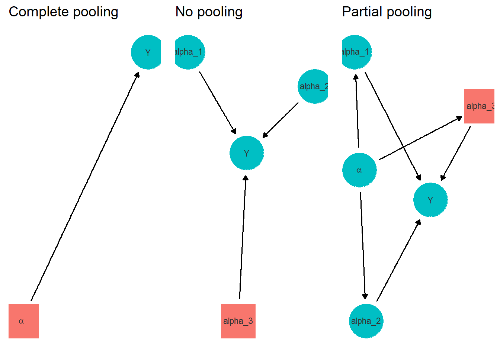
We will see the difference between the three models: complete pooling (one \(\alpha\)), no pooling (3 \(\alpha\)s) and partial pooling (3 \(\alpha\) + 1 overarching \(\alpha\)).
Model 2 from tutorial 1 is based on complete pooling of the data or fixed effect: a unique \(\alpha\) for all settlement type.
6.3.8 No-pooling
Let’s implement a no-pooling framework, that is \(\alpha\) will be estimated independently for each settlement type \(t\). Equation (6.3) represents its formal model, whereby \(\alpha\) is indexed by \(t\) the settlement type and each \(\alpha_t\) has a identical but independent prior Normal(5,4).
\[\begin{equation} population \sim Poisson( pop\_density * settled\_area) \\ pop\_density \sim Lognormal( \alpha_t, \sigma) \\[10pt] \alpha_t \sim Normal( 5, 4 ) \\ \sigma \sim Uniform( 0, 4 )\tag{6.3} \end{equation}\]How do you write it in Stan? We will show only the code that is impacted.
// Model 1: Independent alpha by settlement type
data{
...
int<lower=0> type[n]; // settlement type
int<lower=0> ntype; // number of settlement types
}
parameters{
...
// independent intercept by settlement type
vector[ntype] alpha_t;
}
model{
// population totals
...
pop_density ~ lognormal( alpha_t[type], sigma );
// independent intercept by settlement type
alpha_t ~ normal(5, 4);
...
}
generated quantities{
...
for(idx in 1:n){
density_hat[idx] = lognormal_rng( alpha_t[type[idx]], sigma );
population_hat[idx] = poisson_rng(density_hat[idx] * area[idx]);
}
}In the data block , we declare the observation structure of settlement
type.
In the parameters block , \(\alpha\) becomes a vector of size 5, the
number of settlement type in the data.
In the model block,we choose the same prior for every \(\alpha_t\), five
normal distributions centered on 5 and with standard deviation 4.
Notice how the indexing works in the generated quantities block.
Once the model is written, we prepare the corresponding data, adding the settlement type:
# 3. Hierarchical model by settlement type ----
# No-pooling
# prepare data for stan
stan_data_model1 <- list(
population = data$N,
n = nrow(data),
area = data$A,
type = data$type,
ntype= n_distinct(data$type))And run the model in a similar fashion as in part I:
# mcmc settings
chains <- 4
warmup <- 250
iter <- 500
seed <- 1789
# parameters to monitor
pars <- c('alpha_t','sigma', 'population_hat', 'density_hat')
# mcmc
fit1 <- rstan::stan(file = file.path('dat/BUM_tutorial/tutorial2_model1.stan'),
data = stan_data_model1,
iter = warmup + iter,
chains = chains,
warmup = warmup,
pars = pars,
seed = seed)No warnings are output by stan, the model has converged.
Figure 6.20 shows that the estimated \(\hat\alpha_t\) vary by settlement type. We also see how the previously estimated \(\alpha\) was averaging between the different patterns.
# plot estimated parameter
stan_plot(fit1, pars='alpha_t', fill_color='orange')+
# add alpha from tutorial 1
geom_vline(xintercept=4.755109, size=1.5, linetype=2)+
annotate('text', x=5, y=5.7, label="alpha estimated \nin tutorial 1")Figure 6.20: Intercept estimated independently by settlement type
We draw the observed vs predicted plot to see the impact of estimating \(\alpha\) by settlement type:
# write function to extract posterior predictions and summarise them in a table
getPopPredictions <- function(model_fit,
estimate='population_hat',
obs='N', reference_data=data){
# extract predictions
predicted_pop <- as_tibble(extract(model_fit, estimate)[[estimate]])
colnames(predicted_pop) <- reference_data$id
# summarise predictions
predicted_pop <- predicted_pop %>%
pivot_longer(everything(),names_to = 'id', values_to = 'predicted') %>%
group_by(id) %>%
summarise(across(everything(), list(mean=~mean(.),
upper=~quantile(., probs=0.975),
lower=~quantile(., probs=0.025)))) %>%
left_join(reference_data %>%
rename('reference'=all_of(obs)) %>%
select(id, reference), by = 'id')%>%
mutate(
residual= predicted_mean - reference,
ci_size = predicted_upper- predicted_lower,
estimate = estimate
)
return(predicted_pop)
}
# plot posterior predictions
ggplot(
rbind(
getPopPredictions(fit1) %>%
mutate(type='Population count'),
getPopPredictions(fit1, estimate = 'density_hat', obs='pop_density') %>%
mutate(type='Population density')
) %>%
mutate(type= factor(type, levels=c('Population density', 'Population count')))) +
geom_pointrange(aes(x=reference, y=predicted_mean, ymin=predicted_lower, ymax=predicted_upper
),
fill='grey50', color='grey70', shape=21
)+
geom_abline(slope=1, intercept = 0, color='orange', size=1)+
theme_minimal()+
labs(title = '', x='Observations', y='Predictions')+
facet_wrap(.~type, scales = 'free')Figure 6.21: Comparison of observations with predictions from model 1
We see that the predicted population density has now five modes that correspond to the five settlement types.
6.3.9 Partial pooling
Let’s try now partial pooling. Partial-pooling involves a hierarchical set-up for the priors, that is, each \(\alpha_t\) prior distribution will depend on an overarching \(\alpha\) prior distribution. In other words, \(\alpha\) defines a country-wide distribution that constrains each \(\alpha_t\) to be in a similar range.
\[\begin{equation} population \sim Poisson( pop\_density * settled\_area) \\ pop\_density \sim Lognormal( \alpha_t, \sigma) \\[5pt] \alpha_t \sim Normal( \alpha, \nu_\alpha ) \\[5pt] \alpha \sim Normal( 5, 10 ) \\ \nu_\alpha \sim Uniform( 0, 15 ) \\ \sigma \sim Uniform( 0, 10 )\tag{6.4} \end{equation}\]Note that:
\(\alpha_t\), the random effects are each drawn from a Normal distribution with the same overarching hyperparameters -parameters of prior distributions- \(\alpha\) and \(\nu_\alpha\).
We relax the prior constraint on \(\alpha\) and \(\sigma\) from a Normal(5, 4) and Uniform (0,4) to a Normal(5,10) and Uniform(0,10). Hierarchical models are complex to estimate as some parameters are defined as correlated. We therefore offer to the algorithm more space to explore.
We set a Uniform(0, 15) as hyperprior -prior distribution of a hyperparameter- for \(\nu_\alpha\), the standard deviation of the random effect prior, because standard deviations are positive. We set up a wider range for \(\nu_\alpha\) than for \(\sigma\) because from experience standard deviations of hierarchically defined parameters are more difficult to estimate than other standard deviations (see point 2).
In stan we will write the mode like this:
// Model 2: Hierarchical alpha by settlement type
parameters{
...
// hierarchical intercept by settlement
vector[ntype] alpha_t;
real alpha;
real<lower=0> nu_alpha;
}
model{
...
// hierarchical intercept by settlement
alpha_t ~ normal(alpha, nu_alpha);
alpha ~ normal(5, 10);
nu_alpha ~ uniform(0, 15);
}We add the new parameters to the parameters to monitor and we run the model:
# Partial pooling
pars <- c('alpha_t','alpha', 'nu_alpha', 'sigma', 'population_hat', 'density_hat')
# mcmc
fit2 <- rstan::stan(file = file.path('dat/BUM_tutorial/tutorial2_model2.stan'),
data = stan_data_model1,
iter = warmup + iter,
chains = chains,
warmup = warmup,
pars = pars,
seed = seed)## Warning: There were 2 divergent transitions after warmup. See
## https://mc-stan.org/misc/warnings.html#divergent-transitions-after-warmup
## to find out why this is a problem and how to eliminate them.## Warning: Examine the pairs() plot to diagnose sampling problemsWe can now compare the estimated parameters between a no pooling and a partial pooling framework.
# extract parameters from both models
fit2_alpha_t <- summary(fit2, pars=c('alpha_t'))$summary
fit1_alpha_t <- summary(fit1, pars=c('alpha_t'))$summary
# plot parameters
data_plot <- rbind(
as_tibble(fit1_alpha_t, rownames='param') %>%
mutate(model='No pooling'),
as_tibble(fit2_alpha_t, rownames='param') %>%
mutate(model='Partial pooling')
) %>%
mutate(
model = factor(model, levels=c('No pooling','Partial pooling')),
param_ = paste(param,model),
labels = ifelse(model=='Partial pooling', param, '')) %>%
arrange(param_)
ggplot(data_plot, aes(mean,param_, color=model, fill=model,label=labels))+
geom_point()+
geom_linerange(aes(xmin=`2.5%`, xmax=`97.5%`))+
theme_minimal()+
labs(y='')+
scale_y_discrete(labels=data_plot$labels)Figure 6.22: Comparison between alpha_t estimated independently and hierarchically
There are not striking differences between the two models, but the no-pooling framework tends to over estimate the gap between each random effect, whereas the partial pooling framework tends to pull the random effects towards each other. Table 6.3 shows how incorporating the settlement type grouping has a direct effect on the prediction.
# Complete pooling
# load previous model for complete pooling
fit_tuto1_model2 <- readRDS('dat/BUM_tutorial/tutorial1_model2_fit.rds')
# build comprehensive dataframe
comparison_df <- rbind(
getPopPredictions(fit1) %>%
mutate(model='No pooling'),
getPopPredictions(fit2) %>%
mutate(model='Partial pooling'),
getPopPredictions(fit_tuto1_model2) %>%
mutate(model='Complete pooling'))
# compute goodness-of-fit metrics
comparison_df %>% group_by(model) %>%
summarise( `Bias`= mean(residual),
`Inaccuracy` = mean(abs(residual)),
`Imprecision` = sd(residual)
) %>% kbl(caption = 'Goodness-of-fit metrics comparison between complete pooling, no pooling, and partial pooling') %>% kable_minimal()| model | Bias | Inaccuracy | Imprecision |
|---|---|---|---|
| Complete pooling | 61.10768 | 265.2585 | 337.3459 |
| No pooling | 46.42266 | 234.7723 | 307.6791 |
| Partial pooling | 45.57797 | 234.1481 | 307.1285 |
We will save the model as
Estimating \(\alpha\) by settlement type does improve the model as shown by smaller residuals (Bias and Imprecision) and less variation (Inaccuracy). The hierarchical model does reduce slightly Bias but not strikingly, which indicates that the number of survey sites per settlement type was big enough to estimate the \(\alpha_t\) independently, in a no-pooling framework.
We will see however in the next section the second advantage of hierarchical modelling.
6.4 Part III: How to model small-scale spatial variation
Part II above explored how to model large-scale spatial patterns: how population density differs per large grouping such as by region or settlement type. We integrated those large-scale variations in a Bayesian framework by using a hierarchical random intercept model for the population density.
In this section we will integrate small-scale variations of population density that are linked to local context of human settlement. Figure 6.23 shows how high-resolution geospatial covariates provide precise information on local context.
Figure 6.23: Example of a covariate (residential area) around Onitscha, Nigeria
Adding high-resolution covariates helps to improve the model fit as well as guides population prediction in unsampled areas. For data to be used as covariates in the model, they should be:
correlated with differences in population density
measured consistently and completely across the study space
accurately mapped as high-resolution geospatial layers
High-resolution covariates that are suitable for the modelling are typically spatial covariates with national coverage and consistent data collection. While individual or household-level information, such as collected during surveys, is useful for understanding differences in demographic characteristics, that type of information is difficult to use in the bottom-up approaches because it only comes from a sample of households. The primary objective of the population model is to make a spatially-complete prediction.
6.4.1 Goals
- Understand requirements for covariates to be included in the model
- Get an overview of covariates used in WorldPop bottom-up population models
- Familiarize with covariates processing for population model
- Integrate a linear regression to refine the definition of the median of the Lognormal
- Add a random slope model
- Introduce the concept of initialisation in a MCMC model estimation
6.4.2 Supporting readings
To include a spatial covariate in the modelling and to use it as a support for prediction, we use gridded datasets, known as rasters. You would need thus to have basic GIS knowledge about raster and vector file management. It does not need to be in R, it can be in QGIS, ArcGIS, Python or any GIS software of your choice.
The purpose of this tutorial is not spatial data processing. We will just mention processing techniques that are required to prepare covariates data for population modelling.
However, here are some R resources on spatial manipulation:
The bible by Pebesma and Bivand on the
sf(vector data) andstars(raster data) R packages with excellent overview of the different spatial manipulationsA hands-on introduction to
sfandrasterpackage by the University of WageningenA focus on raster manipulation with
rasterandterraby Hijmans
We are using the same packages you loaded previously. If you have not loaded the packages already, you can load them just as below.
# 1 Set-up ----
# load libraries
library(tidyverse) # managing data
library(ggdag) # drawing DAG
library(kableExtra) # visualising table
library(here) # handling path
library(rstan) # running Bayesian models
library(plotly) # interactive plot
library(RColorBrewer) # colours
# stan setup
options(mc.cores = parallel::detectCores()-1)
rstan::rstan_options(auto_write = TRUE) # speed up running time of compiled model
knitr::opts_chunk$set(fig.align = "center") 6.4.3 Formal modelling
We will work from model 3 in Part II which is based on a Poisson distribution to model population count and on a Lognormal distribution with a hierarchical random intercept by settlement type and region to model population density .
Because the median of the population density is only defined with a random intercept, it results in 5 (number of settlement type) x 11 (number of region) options for the population density estimates. To add small-scale variations we refine the median of the Lognormal with a regression model that integrates the covariates.
More formally, let’s define \(X\) a matrix of size number of observations x number of covariates that contains the covariates values for each study site and \(\beta\) a vector of size the number of covariates. Based on Equation 3 in tutorial 2 (and removing the prior distribution for \(\alpha_{t,r}\) for sake of readability), we define \(\mu\) the median of the Lognormal distribution as follows:
\[\begin{equation} population 〜 Poisson( pop\_density * settled\_area) \\ pop\_density 〜 Lognormal(\mu, \: \sigma) \\ \mu = \alpha_{t,r} + X \beta \\[10pt] \beta 〜 Normal(0,10)\tag{6.3} \end{equation}\]Note that the prior for \(\beta\) are identical normal distribution for each covariate with mean 0 and standard deviation 10 to avoid introducing any bias.
Figure 6.24 shows the updated dependent relationships of our model when integrating covariates.
Figure 6.24: Dependancy graph for model 1 of tutorial 3
6.4.4 Review of the covariates used in WorldPop
To date, five bottom-up population models have been produced at WorldPop:
WorldPop. 2019. Bottom-up gridded population estimates for Nigeria, version 1.2.
WorldPop, University of Southampton. https://dx.doi.org/10.5258/SOTON/WP00655.WorldPop (School of Geography and Environmental Science, University of
Southampton). 2020. Bottom-up gridded population estimates for Zambia, version 1.0.
https://dx.doi.org/10.5258/SOTON/WP00662WorldPop and Institut National de la Statistique et de la Démographie du Burkina Faso. 2021. Census-based gridded population estimates for Burkina Faso (2019), version 1.0. WorldPop, University of Southampton. https://dx.doi.org/10.5258/SOTON/WP00687.
Boo G, Darin E, Leasure DR, Dooley CA, Chamberlain HR, Lazar AN, Tatem AJ. 2020.
Modelled gridded population estimates for the Kinshasa, Kongo-Central, Kwango, Kwilu,
and Mai-Ndombe provinces in the Democratic Republic of the Congo, version 2.0.
WorldPop, University of Southampton. https://dx.doi.org/10.5258/SOTON/WP00669WorldPop. 2020. Bottom-up gridded population estimates for the Kinshasa, Kongo-Central, Kwango, Kwilu, and Mai-Ndombe provinces in the Democratic Republic of the Congo, version 1.0. WorldPop, University of Southampton. https://dx.doi.org/10.5258/SOTON/WP00658
In addition to that, two models are currently being updated: Nigeria version 2.0 and Democratic Republic of the Congo v3.0.
Those six models encompass a large range of covariates, that are specific to each country. Table 6.4 offers an overview of the final covariates set selected for each model.
review_cov <- read_csv('dat/BUM_tutorial/covs_review.csv')
review_cov %>% arrange(Type) %>% kbl(caption='Review of covariates used in WorldPop bottom-up population models') %>% kable_minimal()| Type | Covariate | Model | Source |
|---|---|---|---|
| Gridded population | UN-adjusted projected gridded estimates | Burkina Faso v1.0 | WorldPop |
| Gridded population | Projected gridded estimates | Nigeria v1.2 | WorldPop |
| Gridded population | Mean UN-adjusted projected gridded estimates within a 2km radius | Democratic Republic of Congo v1.0 | WorldPop |
| Infrastucture | Fricition surface | Burkina Faso v1.0 | Access to the Cities project |
| Infrastucture | Distance to secondary roads | Burkina Faso v1.0 | National Geographical Office |
| Infrastucture | Household size | Nigeria v1.2, Nigeria v2.0 | Demographic and Health Survey |
| Infrastucture | Residential roads density | Democratic Republic of Congo v1.0 | OpenStreetMap |
| Infrastucture | Travel time to cities | Democratic Republic of Congo v1.0 | Malaria Atlas Project |
| Infrastucture | Tertiary-sector activities density | Democratic Republic of Congo v1.0 | OpenStreetMap |
| Natural feature | Distance to temporary rivers | Burkina Faso v1.0 | National Geographical Office |
| Natural feature | Monthly variability of dry matter productivity | Democratic Republic of Congo v3.0 | Copernicus |
| Natural feature | Monthly variability of surface air temperature | Democratic Republic of Congo v3.0 | Copernicus |
| Natural feature | Land surface ‘roughness’ from Synthetic Aperture Radard VH | Nigeria v2.0 | Sentinel-1 |
| Natural feature | Land surface ‘roughness’ from Synthetic Aperture Radard VV | Nigeria v2.0 | Sentinel-1 |
| Settlement | Mean building count within a 5km radius | Burkina Faso v1.0 | Ecopia & Maxar |
| Settlement | Mean building area within a 1km radius | Democratic Republic of Congo v2.0 | Ecopia & Maxar |
| Settlement | Mean distance to nearest building within a 1km radius | Democratic Republic of Congo v2.0 | Ecopia & Maxar |
| Settlement | Mean building count within a 1km radius | Democratic Republic of Congo v2.0 | Ecopia & Maxar |
| Settlement | Mean building area | Zambia v1.0 | Ecopia & Maxar |
| Settlement | Building density | Zambia v1.0 | Ecopia & Maxar |
| Settlement | Coefficient of variation of building area | Zambia v1.0 | Ecopia & Maxar |
| Settlement | Sum residential area within a 1km radius | Nigeria v1.2 | Oak Ridge National Laboratory |
| Settlement | Sum nonresidential area within a 1km radius | Nigeria v1.2 | Oak Ridge National Laboratory |
| Settlement | School density within a 1km radius | Nigeria v1.2 | Oak Ridge National Laboratory |
| Settlement | Mean building perimeter | Democratic Republic of Congo v3.0 | Ecopia & Maxar |
| Settlement | Compactness of building | Democratic Republic of Congo v3.0 | Ecopia & Maxar |
The covariates selected can be broadly classified as describing four main drivers of local population density variation:
- previous population spatial distribution through WorldPop top-down population disaggregation (WorldPop Research Group et al. 2018)
- infrastructure through OpenStreetMap (OpenStreetMap contributors 2018), country-specific resources (for example Institut Géographique du Burkina Faso (2015)) or modelled resources (for example travel time to cities (Weiss et al. 2018a))
- natural features through remote sensing product such as radar data (Sentinel-1) or dry matter productivity (Copernicus)
- settlement shape through the morphology of building footprints (Ecopia.AI & Maxar Technologies 2019) or settled area (Oak Ridge National Laboratory 2018a)
Other covariates sources that were considered (but not selected in the final models) were:
Conflict locations from the Armed Conflict Location and Event Data Project
Climatic variables from the Climatic Research Unit at the university of Anglia
Active mining concessions from the IPIS group
Land cover classification from the European Spatial Agency
Global forest change from the University of Maryland
Elevation and slope from WorldDEM
Fossil fuel emissions from the Open-source Data Inventory for Anthropogenic CO2 Project
To build a model, we first gather all covariates that can be related to our specific population data. It can reach up to 900+. We then use geospatial analysis techniques to obtain gridded version of the covariates with identical spatial resolution, alignment and extent. It involves resampling and clipping for covariates provided as raster files or for covariates provided as vector files computing count, density, distance to nearest features or even interpolation techniques.
6.4.5 Covariates engineering
Further covariates engineering steps can help extracting even more information from the gathered covariates.
- Log-transformation
Considering the logarithm of covariates helps handling extreme values.
- Focal statistics
Focal statistics consist in summarising covariates in a moving window around each grid cell. As seen in Table 6.4, we used different window sizes (1km, 2km or 5km) and summary statistics (mean or coefficient of variation). It provides contextual information around the grid cells.
- Standardisation
Scaling the covariate (that is subtracting the mean and dividing by the standard deviation) helps enhancing meaningful local variations from the mean. The scaling can even be refined by computing the mean and the standard deviation by region, such that local variations are representative of the region.
6.4.5.1 A note on covariate selection
After engineering the gathered covariates, we might end up with 1000+ potential covariates.
To select the best one for prediction purposes, we generally used one of the two following methods:
pairwise correlation and scatter plot with the population density at study site level
univariate model, testing each covariate successively
6.4.6 Including covariates in the model
We focus in the remaining parts of the tutorial on the data we downloaded from Leasure et al. (2020f) which corresponds to the Nigeria model v1.2.
6.4.7 Overview of the covariates in Nigeria, v1.2
Six covariates were used in Nigeria v1.2 model:
x_1: gridded population estimates from WorldPop Globalx_2: school densities within a 1km radiusx_3: household sizes by interpolating Demographic Health Survey results from 2013x_4: settled area within a 1km radiusx_5: residential area in a 1km radiusx_6: nonresidential settled area within a 1km radius
Covariate x_4 was scaled based on its mean and standard deviation
nationally, whereas covariates x_5 and x_6 were scaled based on
their mean and standard deviation within a 50-km radius. Leasure et al
scaled x_5 and x_6 in this way because they suspected that
neighborhood types may not be directly comparable across regions
(especially northern versus southern Nigeria). This scaling also reduced
correlation with x_4 .
They scaled the WorldPop Global estimates (x_1) based on their mean
and standard deviation nationally. They treated this covariate
as an indicator of relative population densities based on the geospatial
covariates that were used in the random forest model.
Covariate x_2 was scaled using its mean and standard deviation within
a 50km radius. They scaled this covariate within a 50km moving window
because what constitutes a “high density” of schools varies by region
and this distinction was lost when the covariate was scaled nationally.
This also helped to control for possible differences in school mapping
effort in different regions.
They scaled x_3 based on its mean and standard deviation nationally.
One key reason for including this covariate was to account for a strong
north–south gradient in household sizes, with significantly more people
per household in northern Nigeria than in southern Nigeria.
6.4.8 Preparing the data
To integrate the covariates in the model, we build first a dataset with the average of the covariate values for each study site using zonal statistics.
Note that this constitutes a change in support: we might want to check if the range of covariates values at study site level is representative of the covariate values at grid cell level.
Figure 6.25 shows the relation between the covariates and
the population density at study site level. We see that household size
(x_3) is positively associated with population density. The
negative value are due to the scaling method adopted. On the opposite,
nonresidential settled area (x_6) is negatively associated with population density
which is
expected: the more the surroundings are nonresidential the lower the
population density.
# 2. Covariates preparation ----
# load data
data <- readxl::read_excel(here('dat/BUM_tutorial/nga_demo_data.xls'))
data <- data %>%
mutate(
pop_density=N/A,
id = as.character(1:nrow(data))
)
# contrast covariates with pop density
data_long <- data %>%
pivot_longer(starts_with('x'), names_to = 'cov')
ggplot(data_long, aes(x=pop_density,y=value))+
geom_point()+
geom_smooth(method = "lm", se = FALSE,color='orange')+
theme_minimal()+
facet_wrap(.~cov, ncol=3, scales = 'free')+
labs(x='Population density', y='')Figure 6.25: Scatterplot of covariates values vs population density for each study site
Before implementing the model in stan, we uniformly scale the covariates at study site level, such that the \(\beta_k\) have the same
scale. We first compute the scaling coefficients (mean and standard
deviation) for each covariate:
# compute scaling factors (mean and sd)
covariatesScaling <- function(var){
mean_var <- mean(var)
sd_var <- sd(var)
return(
data.frame(
'cov_mean'= mean_var,
'cov_sd' = sd_var
)
)
}
covs <- data %>%
select(starts_with('x'))
scale_factor <- bind_rows(apply(covs, 2, covariatesScaling))
scale_factor$cov <- colnames(covs)
scale_factor %>% select(cov, cov_mean, cov_sd) %>% kbl %>% kable_minimal()| cov | cov_mean | cov_sd |
|---|---|---|
| x1 | 3.913963 | 8.071879 |
| x2 | 2.950790 | 3.970139 |
| x3 | 0.000000 | 1.000000 |
| x4 | 5.081461 | 4.748466 |
| x5 | 3.941279 | 4.377713 |
| x6 | 2.729769 | 5.028868 |
We then apply the scaling coefficient to the covariates:
# apply scaling factors to covariates
covs_scaled <- covs %>%
mutate(cluster_id = 1:nrow(covs)) %>%
pivot_longer(-cluster_id,names_to = 'cov') %>%
left_join(scale_factor, by="cov") %>%
mutate(value= (value-cov_mean)/cov_sd ) %>%
select(-cov_mean, -cov_sd) %>%
pivot_wider(names_from = cov, values_from = value, id_cols = cluster_id) %>%
select(-cluster_id)We store the scaled covariates and the scaling coefficients for the prediction stage (in Part IV).
6.4.9 Implementing the model
Equation (6.3) is implemented in stan as follows:
// Model 1: Hierarchical alpha by settlement type , region + covariates
data{
...
// slope
int<lower=0> ncov; // number of covariates
matrix[n, ncov] cov; // covariates
}
parameters{
...
// slope
row_vector[ncov] beta;
}
transformed parameters{
...
for(idx in 1:n){
pop_density_median[idx] = alpha_t_r[type[idx], region[idx]] + sum( cov[idx,] .* beta );
}
}
model{
...
//slope
beta ~ normal(0,10);
}
generated quantities{
...
for(idx in 1:n){
density_hat[idx] = lognormal_rng( alpha_t_r[type[idx], region[idx]] + sum(cov[idx,] .* beta), sigma );
}
}Note the two new data types - matrix for the covariate values and
row_vector for \(\beta\) - as well as the new operator, .* .
A row vector is a matrix with one row. .* performs elementwise multiplication.
We need these elements because of the way we coded the
linear regression for pop_density_median:in a for loop running through each study site
defined by their idx. We extract for each study site
the corresponding covariates values, cov[idx,] which is a row vector.
To get a vector of each covariate value associated with each parameter \(\beta_k\), beta needs to
be a row_vector and the multiplication needs to be performed element by element.
We keep the same set up for the MCMC:
# 3. Modelling with covariates ----
# mcmc settings
chains <- 4
warmup <- 500
iter <- 500
seed <- 1789And we add the covariates to stan input data:
# prepare data for stan
stan_data_model1 <- list(
population = data$N,
n = nrow(data),
area = data$A,
type = data$type,
ntype= n_distinct(data$type),
region = data$region,
nregion = n_distinct(data$region),
seed=seed,
cov = covs_scaled,
ncov = ncol(covs_scaled)
)We add beta as parameter to monitor and run the model.
pars <- c('alpha','sigma','beta','alpha_t', 'nu_alpha', 'nu_alpha_t', 'population_hat', 'density_hat')
# mcmc
fit1 <- rstan::stan(file = file.path('dat/BUM_tutorial/tutorial3_model1.stan'),
data = stan_data_model1,
iter = warmup + iter,
chains = chains,
warmup = warmup,
pars = pars,
seed = seed)## Warning in .local(object, ...): some chains had errors; consider specifying chains = 1 to debug## here are whatever error messages were returned## [[1]]
## Stan model 'anon_model' does not contain samples.## Warning in validityMethod(object): The following variables have undefined values: population_hat[1],The following
## variables have undefined values: population_hat[2],The following variables have undefined values: population_hat[3],The
## following variables have undefined values: population_hat[4],The following variables have undefined values:
## population_hat[5],The following variables have undefined values: population_hat[6],The following variables have
## undefined values: population_hat[7],The following variables have undefined values: population_hat[8],The following
## variables have undefined values: population_hat[9],The following variables have undefined values: population_hat[10],The
## following variables have undefined values: population_hat[11],The following variables have undefined values:
## population_hat[12],The following variables have undefined values: population_hat[13],The following variables have
## undefined values: population_hat[14],The following variables have undefined values: population_hat[15],The following
## variables have undefined values: population_hat[16],The following variables have undefined values:
## population_hat[17],The following variables have undefined values: population_hat[18],The following variables have
## undefined values: population_hat[19],The following variables have undefined values: population_hat[20],The following
## variables have undefined values: population_hat[21],The following variables have undefined values:
## population_hat[22],The following variables have undefined values: population_hat[23],The following variables have
## undefined values: population_hat[24],The following variables have undefined values: population_hat[25],The following
## variables have undefined values: population_hat[26],The following variables have undefined values:
## population_hat[27],The following variables have undefined values: population_hat[28],The following variables have
## undefined values: population_hat[29],The following variables have undefined values: population_hat[30],The following
## variables have undefined values: population_hat[31],The following variables have undefined values:
## population_hat[32],The following variables have undefined values: population_hat[33],The following variables have
## undefined values: population_hat[34],The following variables have undefined values: population_hat[35],The following
## variables have undefined values: population_hat[36],The following variables have undefined values:
## population_hat[37],The following variables have undefined values: population_hat[38],The following variables have
## undefined values: population_hat[39],The following variables have undefined values: population_hat[40],The following
## variables have undefined values: population_hat[41],The following variables have undefined values:
## population_hat[42],The following variables have undefined values: population_hat[43],The following variables have
## undefined values: population_hat[44],The following variables have undefined values: population_hat[45],The following
## variables have undefined values: population_hat[46],The following variables have undefined values:
## population_hat[47],The following variables have undefined values: population_hat[48],The following variables have
## undefined values: population_hat[49],The following variables have undefined values: population_hat[50],The following
## variables have undefined values: population_hat[51],The following variables have undefined values:
## population_hat[52],The following variables have undefined values: population_hat[53],The following variables have
## undefined values: population_hat[54],The following variables have undefined values: population_hat[55],The following
## variables have undefined values: population_hat[56],The following variables have undefined values:
## population_hat[57],The following variables have undefined values: population_hat[58],The following variables have
## undefined values: population_hat[59],The following variables have undefined values: population_hat[60],The following
## variables have undefined values: population_hat[61],The following variables have undefined values:
## population_hat[62],The following variables have undefined values: population_hat[63],The following variables have
## undefined values: population_hat[64],The following variables have undefined values: population_hat[65],The following
## variables have undefined values: population_hat[66],The following variables have undefined values:
## population_hat[67],The following variables have undefined values: population_hat[68],The following variables have
## undefined values: population_hat[69],The following variables have undefined values: population_hat[70],The following
## variables have undefined values: population_hat[71],The following variables have undefined values:
## population_hat[72],The following variables have undefined values: population_hat[73],The following variables have
## undefined values: population_hat[74],The following variables have undefined values: population_hat[75],The following
## variables have undefined values: population_hat[76],The following variables have undefined values:
## population_hat[77],The following variables have undefined values: population_hat[78],The following variables have
## undefined values: population_hat[79],The following variables have undefined values: population_hat[80],The following
## variables have undefined values: population_hat[81],The following variables have undefined values:
## population_hat[82],The following variables have undefined values: population_hat[83],The following variables have
## undefined values: population_hat[84],The following variables have undefined values: population_hat[85],The following
## variables have undefined values: population_hat[86],The following variables have undefined values:
## population_hat[87],The following variables have undefined values: population_hat[88],The following variables have
## undefined values: population_hat[89],The following variables have undefined values: population_hat[90],The following
## variables have undefined values: population_hat[91],The following variables have undefined values:
## population_hat[92],The following variables have undefined values: population_hat[93],The following variables have
## undefined values: population_hat[94],The following variables have undefined values: population_hat[95],The following
## variables have undefined values: population_hat[96],The following variables have undefined values:
## population_hat[97],The following variables have undefined values: population_hat[98],The following variables have
## undefined values: population_hat[99],The following variables have undefined values: population_hat[100],The following
## variables have undefined values: population_hat[101],The following variables have undefined values:
## population_hat[102],The following variables have undefined values: population_hat[103],The following variables have
## undefined values: population_hat[104],The following variables have undefined values: population_hat[105],The following
## variables have undefined values: population_hat[106],The following variables have undefined values:
## population_hat[107],The following variables have undefined values: population_hat[108],The following variables have
## undefined values: population_hat[109],The following variables have undefined values: population_hat[110],The following
## variables have undefined values: population_hat[111],The following variables have undefined values:
## population_hat[112],The following variables have undefined values: population_hat[113],The following variables have
## undefined values: population_hat[114],The following variables have undefined values: population_hat[115],The following
## variables have undefined values: population_hat[116],The following variables have undefined values:
## population_hat[117],The following variables have undefined values: population_hat[118],The following variables have
## undefined values: population_hat[119],The following variables have undefined values: population_hat[120],The following
## variables have undefined values: population_hat[121],The following variables have undefined values:
## population_hat[122],ThThe model runs into convergence issues.
The error message that is returned is not very informative.
However the Viewer pane in Rstudio contains more information, namely:
Chain 2: Exception: lognormal_lpdf: Scale parameter is 0, but must be > 0!.
It means that the combination of \(\alpha\), \(\beta\) and covariates value that is currently being tested lead to some zeros in the scale term of the lognormal which is forbidden.
6.4.10 A note on initialisation
This is an opportunity to discuss about initialisation. MCMC simulations start exploring the parameter space from one initial value.
This initial value is controlled in stan by the option init. Its default is
random, that is “Let Stan generate random initial values for all
parameters. The seed of the random number generator used by Stan can be
specified via the seed argument. If the seed for Stan is fixed, the same
initial values are used. The default is to randomly generate initial
values between -2 and 2 on the unconstrained support”.
Defining the starting values helps the algorithm to start close to the region of interest such that no time is lost in exploring an area of the parameter space that we know doesn’t fit the likely values and might run into parameters combination that is unfit to our model structure. Note that the initialisation is not constraining, it just gives a hint to the algorithm.
We initialise only root parameters. Root parameters are parameters that don’t depend on other parameters. Dependent parameters will then inherit the initialisation.
# add initialisation
inits.out <- list()
set.seed(stan_data_model1$seed)
for (c in 1:chains){
inits.i <- list()
inits.i$sigma <- runif(1, 0.4, 0.8)
inits.i$alpha <- runif(1, 3, 6)
inits.i$beta <- runif(stan_data_model1$ncov, -1, 1)
inits.out[[c]] <- inits.i
}Note that we define initial values for each chain. We base them around estimated values in previous models,
and add some random jittering.
We run the estimation with these initialisation values.
fit1bis <- rstan::stan(file = file.path('dat/BUM_tutorial/tutorial3_model1.stan'),
data = stan_data_model1,
iter = warmup + iter,
chains = chains,
warmup = warmup,
pars = pars,
seed = seed,
init= inits.out)## Warning in validityMethod(object): The following variables have undefined values: population_hat[1],The following
## variables have undefined values: population_hat[2],The following variables have undefined values: population_hat[3],The
## following variables have undefined values: population_hat[4],The following variables have undefined values:
## population_hat[5],The following variables have undefined values: population_hat[6],The following variables have
## undefined values: population_hat[7],The following variables have undefined values: population_hat[8],The following
## variables have undefined values: population_hat[9],The following variables have undefined values: population_hat[10],The
## following variables have undefined values: population_hat[11],The following variables have undefined values:
## population_hat[12],The following variables have undefined values: population_hat[13],The following variables have
## undefined values: population_hat[14],The following variables have undefined values: population_hat[15],The following
## variables have undefined values: population_hat[16],The following variables have undefined values:
## population_hat[17],The following variables have undefined values: population_hat[18],The following variables have
## undefined values: population_hat[19],The following variables have undefined values: population_hat[20],The following
## variables have undefined values: population_hat[21],The following variables have undefined values:
## population_hat[22],The following variables have undefined values: population_hat[23],The following variables have
## undefined values: population_hat[24],The following variables have undefined values: population_hat[25],The following
## variables have undefined values: population_hat[26],The following variables have undefined values:
## population_hat[27],The following variables have undefined values: population_hat[28],The following variables have
## undefined values: population_hat[29],The following variables have undefined values: population_hat[30],The following
## variables have undefined values: population_hat[31],The following variables have undefined values:
## population_hat[32],The following variables have undefined values: population_hat[33],The following variables have
## undefined values: population_hat[34],The following variables have undefined values: population_hat[35],The following
## variables have undefined values: population_hat[36],The following variables have undefined values:
## population_hat[37],The following variables have undefined values: population_hat[38],The following variables have
## undefined values: population_hat[39],The following variables have undefined values: population_hat[40],The following
## variables have undefined values: population_hat[41],The following variables have undefined values:
## population_hat[42],The following variables have undefined values: population_hat[43],The following variables have
## undefined values: population_hat[44],The following variables have undefined values: population_hat[45],The following
## variables have undefined values: population_hat[46],The following variables have undefined values:
## population_hat[47],The following variables have undefined values: population_hat[48],The following variables have
## undefined values: population_hat[49],The following variables have undefined values: population_hat[50],The following
## variables have undefined values: population_hat[51],The following variables have undefined values:
## population_hat[52],The following variables have undefined values: population_hat[53],The following variables have
## undefined values: population_hat[54],The following variables have undefined values: population_hat[55],The following
## variables have undefined values: population_hat[56],The following variables have undefined values:
## population_hat[57],The following variables have undefined values: population_hat[58],The following variables have
## undefined values: population_hat[59],The following variables have undefined values: population_hat[60],The following
## variables have undefined values: population_hat[61],The following variables have undefined values:
## population_hat[62],The following variables have undefined values: population_hat[63],The following variables have
## undefined values: population_hat[64],The following variables have undefined values: population_hat[65],The following
## variables have undefined values: population_hat[66],The following variables have undefined values:
## population_hat[67],The following variables have undefined values: population_hat[68],The following variables have
## undefined values: population_hat[69],The following variables have undefined values: population_hat[70],The following
## variables have undefined values: population_hat[71],The following variables have undefined values:
## population_hat[72],The following variables have undefined values: population_hat[73],The following variables have
## undefined values: population_hat[74],The following variables have undefined values: population_hat[75],The following
## variables have undefined values: population_hat[76],The following variables have undefined values:
## population_hat[77],The following variables have undefined values: population_hat[78],The following variables have
## undefined values: population_hat[79],The following variables have undefined values: population_hat[80],The following
## variables have undefined values: population_hat[81],The following variables have undefined values:
## population_hat[82],The following variables have undefined values: population_hat[83],The following variables have
## undefined values: population_hat[84],The following variables have undefined values: population_hat[85],The following
## variables have undefined values: population_hat[86],The following variables have undefined values:
## population_hat[87],The following variables have undefined values: population_hat[88],The following variables have
## undefined values: population_hat[89],The following variables have undefined values: population_hat[90],The following
## variables have undefined values: population_hat[91],The following variables have undefined values:
## population_hat[92],The following variables have undefined values: population_hat[93],The following variables have
## undefined values: population_hat[94],The following variables have undefined values: population_hat[95],The following
## variables have undefined values: population_hat[96],The following variables have undefined values:
## population_hat[97],The following variables have undefined values: population_hat[98],The following variables have
## undefined values: population_hat[99],The following variables have undefined values: population_hat[100],The following
## variables have undefined values: population_hat[101],The following variables have undefined values:
## population_hat[102],The following variables have undefined values: population_hat[103],The following variables have
## undefined values: population_hat[104],The following variables have undefined values: population_hat[105],The following
## variables have undefined values: population_hat[106],The following variables have undefined values:
## population_hat[107],The following variables have undefined values: population_hat[108],The following variables have
## undefined values: population_hat[109],The following variables have undefined values: population_hat[110],The following
## variables have undefined values: population_hat[111],The following variables have undefined values:
## population_hat[112],The following variables have undefined values: population_hat[113],The following variables have
## undefined values: population_hat[114],The following variables have undefined values: population_hat[115],The following
## variables have undefined values: population_hat[116],The following variables have undefined values:
## population_hat[117],The following variables have undefined values: population_hat[118],The following variables have
## undefined values: population_hat[119],The following variables have undefined values: population_hat[120],The following
## variables have undefined values: population_hat[121],The following variables have undefined values:
## population_hat[122],ThThe former error message is not displayed anymore and the model contains samples. We still observe the same issue of tutorial 2, the integer overflow for the prediction of population count in the warmup period. We can safely say that the model has converged.
We can plot the \(\hat\beta_k\). The sign and magnitude of the covariate effects are inline with the association shown in Figure 6.25.
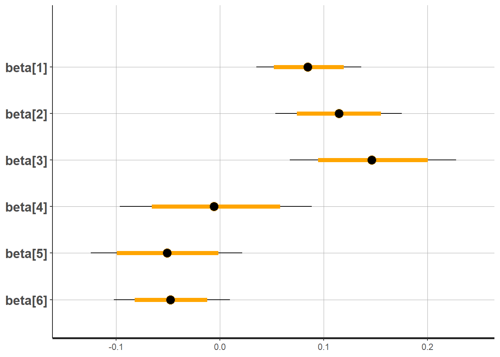
6.4.11 Comparing prediction with previous model
The next question is: How much improvement is brought by integrating covariates in the model?
We load Tutorial 2 model 3 to compare:
We can then compute the predictions for every study site and compare the goodness-of-fit when adding the covariates.
# extract predictions
getPopPredictions <- function(model_fit,
estimate='population_hat',
obs='N', reference_data=data){
# extract predictions
predicted_pop <- as_tibble(extract(model_fit, estimate)[[estimate]])
colnames(predicted_pop) <- reference_data$id
# summarise predictions
predicted_pop <- predicted_pop %>%
pivot_longer(everything(),names_to = 'id', values_to = 'predicted') %>%
group_by(id) %>%
summarise(
across(everything(), list(mean=~mean(.),
upper=~quantile(., probs=0.975),
lower=~quantile(., probs=0.025)))
) %>%
left_join(reference_data %>%
rename('reference'=all_of(obs)) %>%
select(id, reference), by = 'id')%>%
mutate(
residual= predicted_mean - reference,
ci_size = predicted_upper- predicted_lower,
estimate = estimate
)
return(predicted_pop)
}
comparison_df <- rbind(
getPopPredictions(fit0) %>%
mutate(Model='Without covariates'),
getPopPredictions(fit1) %>%
mutate(Model='With covariates'))
# compute goodness-of-fit metrics
comparison_df %>% group_by(Model) %>%
summarise( `Bias`= mean(residual),
`Inaccuracy` = mean(abs(residual)),
`Imprecision` = sd(residual)
) %>% kbl(caption = 'Goodness-of-metrics comparison with and without covariates ') %>% kable_minimal()| Model | Bias | Inaccuracy | Imprecision |
|---|---|---|---|
| With covariates | 33.07044 | 193.2478 | 275.5178 |
| Without covariates | 45.57797 | 234.1481 | 307.1285 |
We see an improvement on every goodness-of-fit metrics.
6.4.12 Grouping and covariates effect: a random slope model
In tutorial 2 we have seen that a model fitting a unique \(\alpha\) for all the observations could be improved by splitting the observations into groupings that would share a similar pattern of population density.
The idea is similar with \(\beta\): some covariates effects might vary
by grouing. Example: x_4, the sum of settled area within a
1km radius might, might have a greater predictive power in rural areas
than in urban areas. The difference relationships between covariate and
population density by settlement type is highlighted in Figure
6.26.
# 4. Modelling covariates with random slope ----
ggplot(data_long %>%
group_by(type) %>%
mutate(
type = paste0(type,' n=' ,n()),
type=as.factor(type)), aes(x=pop_density,y=value, color=type))+
geom_point()+
geom_smooth(method = "lm", se = FALSE)+
theme_minimal()+
facet_wrap(.~cov, ncol=3, scales = 'free')+
labs(y='', x='Population density', color='Settlement type')Figure 6.26: Scatterplot of covariates vs population density by settlement type
Modelling \(\beta_k\) by settlement type is called a random slope model.
Question: Do we want to model the \(\beta_k\) hierarchically?
Click for the solution
Modelliong \(\beta\) hierarchically means assuming that there is a national pattern with subnational refinement. The \(\beta_{k,t}\) can however have opposite directions (see Figure 6.26) which speaks against a common overarching \(\beta\).
Formally, a random slope model is written as follows:
\[\begin{equation} population 〜 Poisson( pop\_density * settled\_area) \\ pop\_density 〜 Lognormal(\mu, \: \sigma) \\[10pt] \mu = \alpha_{t,r} + \beta^{random}_t X^{random} + \beta^{fixed} X^{fixed} \\[15pt] \beta^{random}_t 〜 Normal(0,10) \\ \beta^{fixed} 〜 Normal(0,10) \end{equation}\]The difference can be seen in the indexing: \(\beta^{random}\) is indexed by \(t\). Similarly as in the no-pooling framework in Tutorial 2, we set the priors to be independent prior, namely Normal(0,10).
The stan implementation is as follows:
// Model 1: Hierarchical alpha by settlement type , region + covariates
data{
...
// fixed slope
int<lower=0> ncov_fixed; // number of covariates -1
matrix[n, ncov_fixed] cov_fixed; // covariates
// random slope
vector[n] cov_random;
}
parameters{
...
// slope
row_vector[ncov_fixed] beta_fixed;
vector[ntype] beta_random;
}
transformed parameters{
...
vector[n] beta;
for(idx in 1:n){
beta[idx] = sum( cov_fixed[idx,] .* beta_fixed) + cov_random[idx] * beta_random[type[idx]];
pop_density_median[idx] = alpha_t_r[type[idx], region[idx]] + beta[idx];
}
}
model{
...
//slope
beta_fixed ~ normal(0,10);
beta_random ~ normal(0,10);
}
generated quantities{
...
vector[n] beta_hat;
for(idx in 1:n){
beta_hat[idx] = sum( cov_fixed[idx,] .* beta_fixed) + cov_random[idx] * beta_random[type[idx]];
density_hat[idx] = lognormal_rng( alpha_t_r[type[idx], region[idx]] + beta_hat[idx], sigma );
...
}Note that we wrote the code to model only one random covariate, such that beta_random
is only a vector that contains the \(\beta^{random}_t\). For implementing several
random effect we would need a matrix (settlement type x number of covariates).
To run the model, we distinguish in the input data between the
covariates that are fixed and the one that is random. We choose x_4 ,
the sum of settled area within a 1km radius, to be modelled with a
random effect.
Note that this setting allows to test the model with different covariate candidates for the random effect.
# prepare stan data
stan_data_model2 <- list(
population = data$N,
n = nrow(data),
area = data$A,
type = data$type,
ntype= n_distinct(data$type),
region = data$region,
nregion = n_distinct(data$region),
seed=seed,
cov_fixed = covs_scaled %>% select(-x4),
ncov_fixed = ncol(covs_scaled) -1,
cov_random = covs_scaled$x4
)
pars <- c('alpha','sigma','beta_fixed','beta_random','alpha_t','alpha_t_r', 'nu_alpha', 'nu_alpha_t', 'population_hat', 'density_hat')
# initialise
inits.out <- list()
set.seed(stan_data_model2$seed)
for (c in 1:chains){
inits.i <- list()
# intercept
inits.i$sigma <- runif(1, 0.4, 0.8)
inits.i$alpha <- runif(1, 3, 6)
inits.i$beta_fixed <- runif(stan_data_model2$ncov_fixed, -1, 1)
inits.i$beta_random <- runif(stan_data_model2$ntype, -1, 1)
inits.out[[c]] <- inits.i
}
# mcmc
fit2 <- rstan::stan(file = file.path('dat/BUM_tutorial/tutorial3_model2.stan'),
data = stan_data_model2,
iter = warmup + iter,
chains = chains,
warmup = warmup,
pars = pars,
seed = seed,
init = inits.out)## Warning in validityMethod(object): The following variables have undefined values: population_hat[1],The following
## variables have undefined values: population_hat[2],The following variables have undefined values: population_hat[3],The
## following variables have undefined values: population_hat[4],The following variables have undefined values:
## population_hat[5],The following variables have undefined values: population_hat[6],The following variables have
## undefined values: population_hat[7],The following variables have undefined values: population_hat[8],The following
## variables have undefined values: population_hat[9],The following variables have undefined values: population_hat[10],The
## following variables have undefined values: population_hat[11],The following variables have undefined values:
## population_hat[12],The following variables have undefined values: population_hat[13],The following variables have
## undefined values: population_hat[14],The following variables have undefined values: population_hat[15],The following
## variables have undefined values: population_hat[16],The following variables have undefined values:
## population_hat[17],The following variables have undefined values: population_hat[18],The following variables have
## undefined values: population_hat[19],The following variables have undefined values: population_hat[20],The following
## variables have undefined values: population_hat[21],The following variables have undefined values:
## population_hat[22],The following variables have undefined values: population_hat[23],The following variables have
## undefined values: population_hat[24],The following variables have undefined values: population_hat[25],The following
## variables have undefined values: population_hat[26],The following variables have undefined values:
## population_hat[27],The following variables have undefined values: population_hat[28],The following variables have
## undefined values: population_hat[29],The following variables have undefined values: population_hat[30],The following
## variables have undefined values: population_hat[31],The following variables have undefined values:
## population_hat[32],The following variables have undefined values: population_hat[33],The following variables have
## undefined values: population_hat[34],The following variables have undefined values: population_hat[35],The following
## variables have undefined values: population_hat[36],The following variables have undefined values:
## population_hat[37],The following variables have undefined values: population_hat[38],The following variables have
## undefined values: population_hat[39],The following variables have undefined values: population_hat[40],The following
## variables have undefined values: population_hat[41],The following variables have undefined values:
## population_hat[42],The following variables have undefined values: population_hat[43],The following variables have
## undefined values: population_hat[44],The following variables have undefined values: population_hat[45],The following
## variables have undefined values: population_hat[46],The following variables have undefined values:
## population_hat[47],The following variables have undefined values: population_hat[48],The following variables have
## undefined values: population_hat[49],The following variables have undefined values: population_hat[50],The following
## variables have undefined values: population_hat[51],The following variables have undefined values:
## population_hat[52],The following variables have undefined values: population_hat[53],The following variables have
## undefined values: population_hat[54],The following variables have undefined values: population_hat[55],The following
## variables have undefined values: population_hat[56],The following variables have undefined values:
## population_hat[57],The following variables have undefined values: population_hat[58],The following variables have
## undefined values: population_hat[59],The following variables have undefined values: population_hat[60],The following
## variables have undefined values: population_hat[61],The following variables have undefined values:
## population_hat[62],The following variables have undefined values: population_hat[63],The following variables have
## undefined values: population_hat[64],The following variables have undefined values: population_hat[65],The following
## variables have undefined values: population_hat[66],The following variables have undefined values:
## population_hat[67],The following variables have undefined values: population_hat[68],The following variables have
## undefined values: population_hat[69],The following variables have undefined values: population_hat[70],The following
## variables have undefined values: population_hat[71],The following variables have undefined values:
## population_hat[72],The following variables have undefined values: population_hat[73],The following variables have
## undefined values: population_hat[74],The following variables have undefined values: population_hat[75],The following
## variables have undefined values: population_hat[76],The following variables have undefined values:
## population_hat[77],The following variables have undefined values: population_hat[78],The following variables have
## undefined values: population_hat[79],The following variables have undefined values: population_hat[80],The following
## variables have undefined values: population_hat[81],The following variables have undefined values:
## population_hat[82],The following variables have undefined values: population_hat[83],The following variables have
## undefined values: population_hat[84],The following variables have undefined values: population_hat[85],The following
## variables have undefined values: population_hat[86],The following variables have undefined values:
## population_hat[87],The following variables have undefined values: population_hat[88],The following variables have
## undefined values: population_hat[89],The following variables have undefined values: population_hat[90],The following
## variables have undefined values: population_hat[91],The following variables have undefined values:
## population_hat[92],The following variables have undefined values: population_hat[93],The following variables have
## undefined values: population_hat[94],The following variables have undefined values: population_hat[95],The following
## variables have undefined values: population_hat[96],The following variables have undefined values:
## population_hat[97],The following variables have undefined values: population_hat[98],The following variables have
## undefined values: population_hat[99],The following variables have undefined values: population_hat[100],The following
## variables have undefined values: population_hat[101],The following variables have undefined values:
## population_hat[102],The following variables have undefined values: population_hat[103],The following variables have
## undefined values: population_hat[104],The following variables have undefined values: population_hat[105],The following
## variables have undefined values: population_hat[106],The following variables have undefined values:
## population_hat[107],The following variables have undefined values: population_hat[108],The following variables have
## undefined values: population_hat[109],The following variables have undefined values: population_hat[110],The following
## variables have undefined values: population_hat[111],The following variables have undefined values:
## population_hat[112],The following variables have undefined values: population_hat[113],The following variables have
## undefined values: population_hat[114],The following variables have undefined values: population_hat[115],The following
## variables have undefined values: population_hat[116],The following variables have undefined values:
## population_hat[117],The following variables have undefined values: population_hat[118],The following variables have
## undefined values: population_hat[119],The following variables have undefined values: population_hat[120],The following
## variables have undefined values: population_hat[121],The following variables have undefined values:
## population_hat[122],ThNo convergence issue. We plot beta_random that is a vector with a
\(\hat\beta_t\) for each settlement type.
# plot beta estimation
stan_plot(fit2, pars='beta_random', fill_color='orange')+
# add alpha from tutorial 1
geom_vline(xintercept=-0.006515444, size=1.5, linetype=2)+
annotate('text', x=0.1, y=5.7, label="beta for cov 4 \nfrom first model")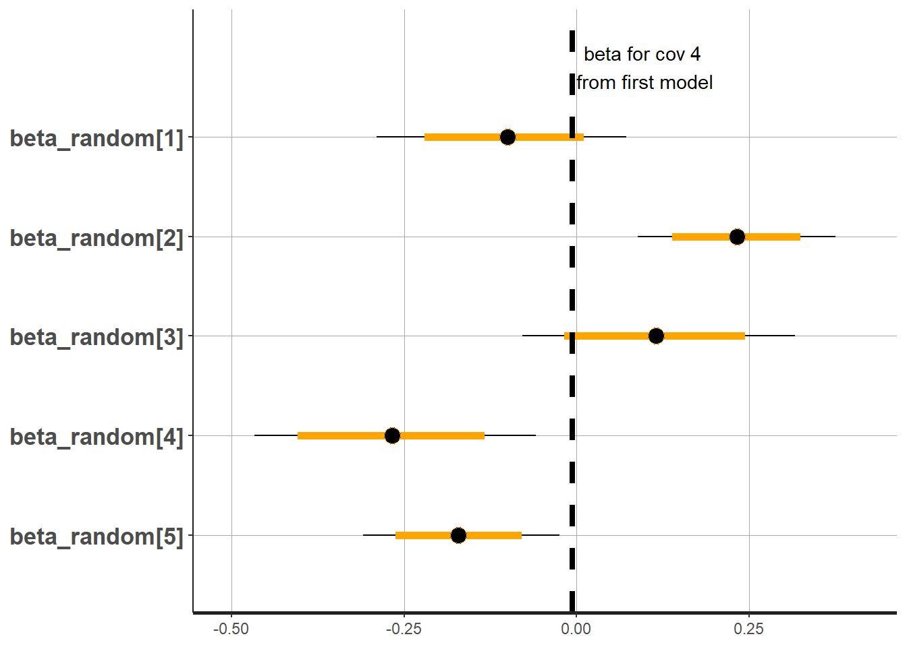
We see that modelling \(\beta^{x4}\) by settlement type unravels different patterns: we observe a non-significant effect for settlement 1 and 3 the most urbanised types. This was expected as the sum of settled area is likely to be homogeneous across urbanised area. We see also that the previous estimtaed \(\beta_4\) was masking effect in opposite direction between settlement 2 and settlement 4,5.
We now want to evaluate the effect on the predicted population count for each study site.
# extract predictions
comparison_df <- rbind(
getPopPredictions(fit1) %>%
mutate(model='Fixed effect'),
getPopPredictions(fit2) %>%
mutate(model='Random effect in x4'))
# compute goodness-of-fit metrics
comparison_df %>% group_by(model) %>%
summarise( `Bias`= mean(residual),
`Inaccuracy` = mean(abs(residual)),
`Imprecision` = sd(residual)
) %>% kbl(caption = 'Goodness-of-metrics comparison with and without random effect in x4 ') %>% kable_minimal()| model | Bias | Inaccuracy | Imprecision |
|---|---|---|---|
| Fixed effect | 33.07044 | 193.2478 | 275.5178 |
| Random effect in x4 | 33.29436 | 192.3725 | 274.9006 |
We see a slight decrease of bias and an increase of the precision of the estimates.
We will save the results of this final model as a RDS file to explore it in Tutorial 4.
6.5 Part IV: Model diagnostics and predictions
From Part I to Part III, we built a bottom-up population model, modelling sequentially. In Part I we modelled population count as a Poisson-Lognormal compound, accounting for settled area. In Part II, we added a hierarchical random intercept by settlement type and region, that differentiates parameter estimation by the natural clustering of the observations. In Part III we modelled small-scale variations in population density by adding a linear regression based on geospatial covariates. We covered thus all the fundamental modelling blocks of WorldPop bottom-up population model, described in Leasure et al. (2020f).
We will cover in this tutorial advanced model diagnostics for a complete goodness-of-fit assessment. Once we check that the model successfully passes the different diagnostics, we will then predict population count for every grid cell of the study area. Predicting population will be the opportunity to talk about estimates uncertainty.
6.5.1 Goals
- Explore convergence issue
- Understand posterior predictive check
- Understand cross-validation and overfitting
- Predict population for every grid cell of the study area
- Visualise prediction uncertainty
- Aggregate prediction in custom spatial units
6.5.2 Supporting readings
Evaluating regression models by the Bayes rules! book, on posterior predictive check and the difference between correct estimation and correct modelling.
Tidy data and Bayesian analysis make uncertainty visualization fun by Matthew Kay, University of Michigan. It hammers the importance of communicating uncertainty with estimates and explains how a Bayesian framework addresses that issue.
You’re fit and you know it: overfitting and cross-validation, by Andy Elmsley. Good introduction to cross-validation despite applying it to machine learning problems.
6.5.3 Extra packages
We will use some additional packages, mainly for GIS manipulation:
rasterfor predicting the gridded population in a raster formatsffor aggregating the prediction in custom spatial unittmapto plot spatial dataRColorBrewerto use nice color palette in plots
#install.packages('raster')
#install.packages('RColorBrewer')
#install.packages('sf')
#install.packages('tmap')Vignettes can be found here: raster, RColorBrewer, sf and tmap.
We will load these packages in addition to the packages we used in previous tutorials
# 1 Set-up ----
# load libraries
library(raster) #Raster data manipulation
library(RColorBrewer) # color code
library(sf) # vector data manipulation
library(tmap) # for mapping
library(tidyverse) # managing data
library(ggdag) # drawing DAG
library(kableExtra) # visualising table
library(here) # handling path
library(rstan) # running Bayesian models
library(plotly) # interactive plot
# stan setup
options(mc.cores = parallel::detectCores()-1)
rstan::rstan_options(auto_write = TRUE) # speed up running time of compiled model6.5.4 Advanced model diagnostics
Before predicting population count for the entire study area we want to
make sure that the model is correct. We thus perform additional checks:
on the model convergence with traceplots and stan warnings,
on the estimated parameters with a posterior predictive check
and on the predicted population count at study site with a
cross-validation approach.
We will work with the first relevant population model that we built in Part I, that is the “basic” Poisson-Lognormal model:
\[\begin{equation} population 〜 Poisson( pop\_density * settled\_area) \\ pop\_density 〜 Lognormal( \mu, \sigma) \\ \\ \mu 〜 Normal( 5, 4 ) \\ \sigma 〜 Uniform( 0, 4 )\tag{6.4} \end{equation}\]We do some set-ups that should now be familiar.
# 1. Model diagnostics ----
# load data
data <- readxl::read_excel(here('dat/BUM_tutorial/nga_demo_data.xls'))
data <- data %>%
mutate(
id = as.character(1:nrow(data)),
pop_density=N/A
)
# mcmc settings
chains <- 4
iter <- 500
seed <- 1789
# stan data
stan_data <- list(
population = data$N,
n = nrow(data),
area = data$A)
# set parameters to monitor
pars <- c('mu', 'sigma', 'density_hat', 'population_hat')6.5.5 Assessing convergence
In this section we will explore models that have convergence issues and discover how to evaluate where they stem from and how to fix it.
First let’s look at the impact of the warmup length, the early phase of the simulations in which the sequences get closer to the mass of the distribution.
We choose a warmup of 20 iterations (instead of 250).
# 1.1 Short warmup period ----
# set short warmup
warmup <- 20
# mcmc
fit_lowWarmup <- rstan::stan(file = file.path('dat/BUM_tutorial/tutorial1_model2.stan'),
data = stan_data,
iter = warmup + iter,
chains = chains,
warmup = warmup,
pars = pars,
seed = seed)## Warning: There were 1097 transitions after warmup that exceeded the maximum treedepth. Increase max_treedepth above 10. See
## https://mc-stan.org/misc/warnings.html#maximum-treedepth-exceeded## Warning: There were 2 chains where the estimated Bayesian Fraction of Missing Information was low. See
## https://mc-stan.org/misc/warnings.html#bfmi-low## Warning: Examine the pairs() plot to diagnose sampling problemsStan shows several warnings. You can explore the meaning of them here.
Looking at the traceplot is, in this case, very informative:
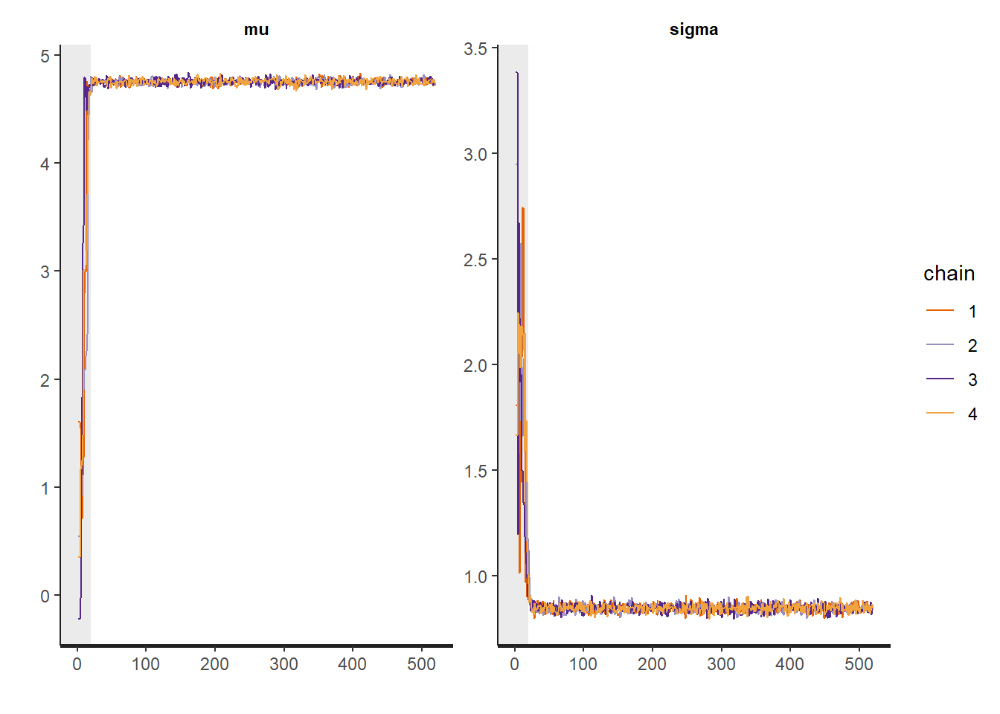
The traceplots indicate that some exploration is still happening after the shaded area, that is after the end of the warmup period.We just need to increase the length of the warmup period.
Next we will look at a more serious convergence issue. Let’s say that we choose unfit priors for our model. Typically we can declare a Uniform with stricter bounds for \(\sigma\):
\[\begin{equation} \sigma 〜 Uniform( 0, 1 ) \end{equation}\]We store the model under dat/BUM_tutorial/tutorial1_model2_wrong.stan and estimate it.
# 1.2 Wrong prior ----
warmup <- 250
# mcmc
fit_wrong <- rstan::stan(file = file.path('dat/BUM_tutorial/tutorial1_model2_wrong.stan'),
data = stan_data,
iter = warmup + iter,
chains = chains,
warmup = warmup,
pars = pars,
seed = seed)## Warning: There were 1990 divergent transitions after warmup. See
## https://mc-stan.org/misc/warnings.html#divergent-transitions-after-warmup
## to find out why this is a problem and how to eliminate them.## Warning: There were 4 chains where the estimated Bayesian Fraction of Missing Information was low. See
## https://mc-stan.org/misc/warnings.html#bfmi-low## Warning: Examine the pairs() plot to diagnose sampling problems## Warning: The largest R-hat is 4.54, indicating chains have not mixed.
## Running the chains for more iterations may help. See
## https://mc-stan.org/misc/warnings.html#r-hat## Warning: Bulk Effective Samples Size (ESS) is too low, indicating posterior means and medians may be unreliable.
## Running the chains for more iterations may help. See
## https://mc-stan.org/misc/warnings.html#bulk-ess## Warning: Tail Effective Samples Size (ESS) is too low, indicating posterior variances and tail quantiles may be unreliable.
## Running the chains for more iterations may help. See
## https://mc-stan.org/misc/warnings.html#tail-essMany metrics detect a convergence issue. The most worrying one is the divergent transitions that are often related with issues in the model structure itself and not only within the estimation process.
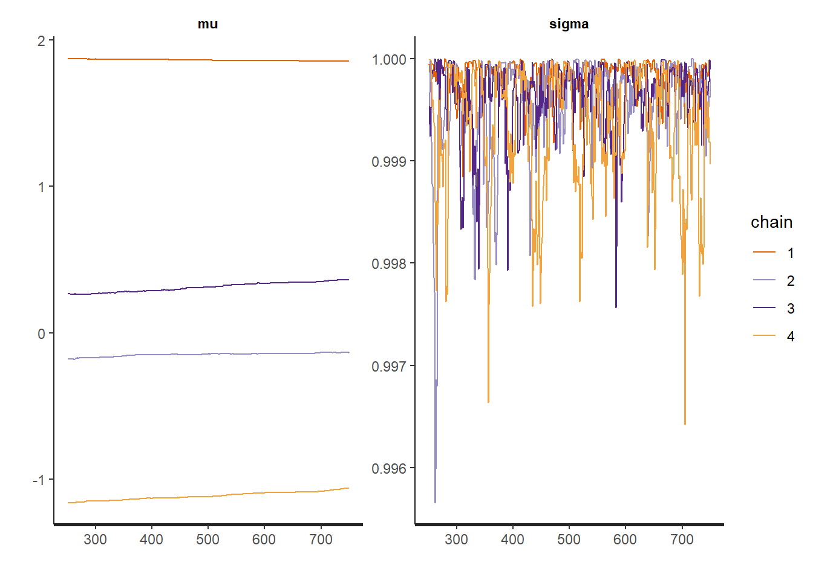
The traceplot for \(\mu\) indicates that the chains didn’t mix. Moreover the traceplot for \(\sigma\) shows clearly the issue in bounding with a ceiling at 1 that overly constrained the estimation.
6.5.6 Checking predicted posterior
Let’s come back to a correctly fit model.
# 2.3 Predicted posterior check ----
# mcmc
fit <- rstan::stan(file = file.path('dat/BUM_tutorial/tutorial1_model2.stan'),
data = stan_data,
iter = warmup + iter,
chains = chains,
warmup = warmup,
pars = pars,
seed = seed)As shown in previous paragraph, Bayesian estimation highly relies on choosing correct priors for the parameters. Those priors should reflect expert knowledge about the quantity of interest that is, then, confronted with the observations. The prior model defines the space for the posterior estimation. We should thus ensure that the prior support did not overly constrain the posterior. This is called a posterior predictive check.
We need first to extract the estimated posterior distribution from
the stanfit object. We do it using the extract function from
rstan.
# extract estimated mu
mus <- data.frame(
# extract parameter
posterior=rstan::extract(fit, pars='mu')$mu,
parameter = 'mu'
)
glimpse(mus)## Rows: 2,000
## Columns: 2
## $ posterior <dbl> 4.776668, 4.765999, 4.769865, 4.709762, 4.781961, 4.759789, 4.757111, 4.767402, 4.728151, 4.761655, 4…
## $ parameter <chr> "mu", "mu", "mu", "mu", "mu", "mu", "mu", "mu", "mu", "mu", "mu", "mu", "mu", "mu", "mu", "mu", "mu",…mus contains the estimated mu for each iteration post-warmup
(500) of each Markov chain (4).
We want to recreate the prior distribution. In model 2 of Part III, we used as prior: \[\mu \sim Normal(5,4)\] We sample from this prior distribution, the same number of draws that we have for the posterior distribution (that is 2000).
# retrieve stan parameter
post_warmup_draws <- iter - warmup
# simulate from the prior distribution
mus$prior <- rnorm(chains * post_warmup_draws, 5, 4)We build for \(\sigma\) a similar dataframe to mus that contrasts its prior
distribution with its posterior distribution and bind it
together with mus.
# build dataframe with parameters distribution comparison
parameters <- rbind(
# alpha
mus ,
#sigma
data.frame(
posterior=rstan::extract(fit, pars='sigma')$sigma,
prior = runif(chains * post_warmup_draws, 0, 4),
parameter = 'sigma')
) %>%
pivot_longer(-parameter,
names_to = 'distribution',
values_to = 'value'
)
# plot distribution comparison for both parameter
ggplotly(ggplot(parameters, aes(x=value, color=distribution, fill=distribution))+
geom_density()+
theme_minimal()+
facet_wrap(.~parameter, scales = 'free'))Figure 6.27: Posterior predictive checks for alpha and sigma
Figure 6.27 shows a posterior predictive check for both \(\mu\) and \(\sigma\). It compares the prior distribution that we set in the model and the estimated posterior distribution. Don’t hesitate to zoom in, as the range of values is very different between the prior and the posterior.
We confirm that our priors did not falsely constrain the posterior, with a very wide range of possible values. The unique constrain we can observe is the lower bound on \(\sigma\) at 0 but this is normal as a variance has to be positive.
6.5.7 Cross-validation of model predictions
After checking the model structure, we revisit the goodness-of-fit metrics based on population predictions.
In Part I to III, we check the goodness-of-fit of the modelled predictions in sample, that is predicting population and comparing it to the observations for the study sites that were already used to fit the model.
In-sample checks do not account for model overfitting. Overfitting occurs when the model does not only reproduce the information from the observations but also the noise. We want the model to be able to accurately predict population also for unknown new study sites. This real-world scenario can be reproduced by keeping a percentage of the observations for model fitting and leaving the remaining study sites for predicting, a mechanism called cross-validation.
We need first to split our data in two, a training set (70%) that will be used for fitting the model and a predicting set (30%) that will be used for model prediction:
# 2.4 Cross validation of predictions ----
set.seed(2004)
# sample observations
train_size <- round(nrow(data)*0.7)
train_idx <- sample(1:nrow(data), size = train_size, replace=F)
# build train datasets
train_data <- data[train_idx,]
# build test datasets
test_data <- data[-train_idx,]In stan, cross-validation can be done simultaneously with model fitting
by providing the testing dataset to the generated quantities modelling
block. Because all variables have to be defined for each set, it lengthens
substantively the code.
data{
int<lower=0> n_train; // number of microcensus clusters in training set
int<lower=0> n_test; // number of microcensus clusters in predicting set
int<lower=0> population_train[n_train]; // count of people
vector<lower=0>[n_train] area_train; // settled area in training
vector<lower=0>[n_test] area_test; // settled area in testing
}
parameters{
// population density
vector<lower=0>[n_train] pop_density_train;
//intercept
real mu;
// variance
real<lower=0> sigma;
}
model{
// population totals
population_train ~ poisson(pop_density_train .* area_train);
pop_density_train ~ lognormal( mu, sigma );
// intercept
mu ~ normal(5, 4);
// variance
sigma ~ uniform(0, 4);
}
generated quantities{
int<lower=-0> population_hat[n_test];
real<lower=0> density_hat[n_test];
for(idx in 1:n_test){
density_hat[idx] = lognormal_rng( mu, sigma );
population_hat[idx] = poisson_rng(density_hat[idx] * area_test[idx]);
}
}We prepare the data for stan and run the model:
# prepare data
stan_data_xval <- list(
population_train = train_data$N,
n_train = nrow(train_data),
n_test = nrow(test_data),
area_train = train_data$A,
area_test = test_data$A,
seed=seed
)
# mcmc setting
pars <- c('mu','sigma', 'population_hat', 'density_hat')
# mcmc
fit_xval <- rstan::stan(file = file.path('dat/BUM_tutorial/tutorial1_model2xval.stan'),
data = stan_data_xval,
iter = warmup + iter,
chains = chains,
warmup = warmup,
pars = pars,
seed = seed)We now have access to two predictions sets: one, fit, from the
in-sample prediction and one, fit_xval, from the cross-validation
prediction.
We compare the goodness-of-metrics from the two models:
# predict population
getPopPredictions <- function(model_fit,
estimate='population_hat',
obs='N', reference_data=data){
# extract predictions
predicted_pop <- as_tibble(rstan::extract(model_fit, estimate)[[estimate]])
colnames(predicted_pop) <- reference_data$id
# summarise predictions
predicted_pop <- predicted_pop %>%
pivot_longer(everything(),names_to = 'id', values_to = 'predicted') %>%
group_by(id) %>%
summarise(
across(everything(), list(mean=~mean(.),
upper=~quantile(., probs=0.975),
lower=~quantile(., probs=0.025)))
) %>%
# merge with observations
left_join(reference_data %>%
rename('reference'=all_of(obs)) %>%
dplyr::select(id, reference), by = 'id') %>%
#
mutate(
residual= predicted_mean - reference,
ci_size = predicted_upper- predicted_lower,
estimate = estimate
)
return(predicted_pop)
}
# build comparison dataframe between in-sample and xvalidation
comparison_df <- rbind(
getPopPredictions(fit) %>%
mutate(Model='In-sample'),
getPopPredictions(fit_xval, reference_data = test_data) %>%
mutate(Model='Cross-validation'))
# compute goodness-of-fit metrics
comparison_df %>% group_by(Model) %>%
summarise( `Bias`= mean(residual),
`Inaccuracy` = mean(abs(residual)),
`Imprecision` = sd(residual)
) %>% kbl(caption = 'Goodness-of-metrics computed in-sample vs cross-validation') %>% kable_minimal()| Model | Bias | Inaccuracy | Imprecision |
|---|---|---|---|
| Cross-validation | 97.49626 | 263.3753 | 312.7340 |
| In-sample | 61.39220 | 265.3511 | 337.3443 |
Table 6.7 shows that all metrics shows a worse fit: the bias, the imprecision and the inaccuracy increase. However they still remains in the same range, which seems to indicate that our model is not overfitting.
A good practice is to always assess the model fit on the testing set to avoid producing overly optimistic goodness-of-fit metrics.
6.5.8 Gridded population prediction
We will cover in this section model predictions for the entire study area at the grid cell level. Population can be predicted for any spatial unit as long as 1. all the covariates and input data can be produced for the spatial unit 2. the predicting spatial unit is not too different in size from the fitting spatial unit, such that the estimated relationship between covariates and population density can still be applied.
We will predict population for grid cell of 100m x 100m and use our best population model: model 2 from part III.
# 3. Population prediction ----
tutorial3_model2_fit <- readRDS("dat/BUM_tutorial/tutorial3_model2_fit.rds")It requires extracting the estimated parameters distributions: \(\hat\alpha_{t,r}, \hat\sigma, \hat\beta^{fixed}, \hat\beta^{random}_t\). These estimated parameters are then combined with the input rasters following this modified model for prediction:
\[\begin{equation} population\_predicted 〜 Poisson( \hat{pop\_density} * settled\_area) \\ \hat{pop\_density} 〜 Lognormal(\hat\mu, \: \hat\sigma) \\ \hat\mu = \hat\alpha_{t,r} + \hat\beta^{random}_t X^{random} + \hat\beta^{fixed} X^{fixed} \tag{6.5} \end{equation}\]\(X\) and \(settled\_area\) are the input data at grid cell level:
Grid-cell based model prediction requires thus 10 input rasters:
settled area
settlement type
administrative region
the six covariates
a mastergrid that defines the grid cells for which to predict the population. These grid cells are (1) contained inside the study area, (2) considered as settled.
Unfortunately we are not allowed to redistribute the settlement map used in Nigeria v1.2, that was provided by Oak Ridge National Laboratory (2018a). We will thus provide the code to show all the steps of population prediction but you will not be able to run it.
We will focus on region 8 that contains only 671 110 cells instead of the 166 412 498 cells for the entire country.
6.5.9 Preparing data for prediction
To predict gridded population, we convert the rasters set to a table with: in rows, the grid cells and in column, each raster value. We don’t need to keep the spatial structure of the raster for model prediction. Every grid cell can be estimated independently as long as we know its administrative region, settlement type and covariates attributes.
library(raster) #Raster data manipulation
wd_path <- 'Z:/Projects/WP517763_GRID3/Working/NGA/ed/bottom-up-tutorial/'
# function that loads the raster and transforms it into an array
getRasterValues <- function(x){
return( raster(paste0(wd_path,x))[])
}
# get a list of the rasters
rasterlist <- list.files(wd_path,
pattern='.tif', full.names = F)
# apply function to raster list
raster_df <- as_tibble(sapply(rasterlist, getRasterValues))raster_df$gridcell_id <- 1:nrow(raster_df)
a <- raster_df %>% filter(mastergrid.tif==1) %>%
dplyr::select(starts_with('settlement'), gridcell_id)
sett_type <- 1:6
a <- a %>%
rowwise() %>%
mutate(
settlementType=sett_type[which.max(c_across(starts_with('settlement')))])
raster_df <- left_join(raster_df %>% dplyr::select(-starts_with('settlementarea')),
a %>% dplyr::select(gridcell_id, settlementType))
colnames(raster_df) <- str_remove(colnames(raster_df), '.tif')
raster_df <- raster_df %>%
mutate(mastergrid = ifelse(is.na(x1), 0, mastergrid),
mastergrid = ifelse(settlementType==6, 0, mastergrid))
write_csv(raster_df %>% filter(mastergrid==1)%>% head(n=10), 'wd/misc/raster_predict_ex.csv')The raster table contains 671 110 rows and 10 columns. 95% of the rows are NAs because they are not considered as settled.
We need to scale the covariates with the scaling factors computed during the fitting stage.
#load scaling factor
scale_factor <- read_csv('dat/BUM_tutorial/scale_factor.csv')
scaled_covs <- settled %>%
# subset covs column
dplyr::select(starts_with('x'), gridcell_id) %>%
# convert table to long format
pivot_longer(-gridcell_id, names_to='cov', values_to = 'value') %>%
# add scaling factor
left_join(scale_factor) %>%
# scale covs
mutate(value_scaled= (value-cov_mean)/cov_sd) %>%
dplyr::select(gridcell_id, cov, value_scaled) %>%
# convert table back to wide format
pivot_wider(names_from = cov, values_from = value_scaled)
# replace the covs with their scaled version
raster_df <- raster_df %>% dplyr::select(-starts_with('x')) %>%
left_join(scaled_covs)6.5.10 Extracting estimated parameters
The second step is to extract the estimated parameter distributions. We use the model fitted with the full observations dataset and not the one from the cross-validation for maximum information.
#extract betas
beta_fixed <- t(rstan::extract(model_fit, pars='beta_fixed')$beta_fixed)
beta_random <- t(rstan::extract(model_fit, pars='beta_random')$beta_random)
#extract alphas
alphas <- rstan::extract(model_fit, pars='alpha_t_r')$alpha_t_r
#extract sigmas
sigmas <- rstan::extract(model_fit, pars='sigma')$sigmaWe first focus on producing \(\hat\beta^{fixed} X^{fixed}\) from Equation (6.5), the covariates modelled with a fixed effect.
\(\hat\beta^{fixed}\) is a 2000 x 5 matrix for the 5 covariates and 2000
estimations. We transposed it to multiply by \(X^{fixed}\), a
310 512 X 5 matrix of covariates for every settled cells.
# extract covariates modelled with a fixed effect
cov_fixed <- settled %>%
dplyr::select(x1:x3, x5:x6) %>%
as.matrix()
cov_fixed <- cov_fixed %*% beta_fixedWe then produce \(\hat\beta^{random}_t X^{random}\), the covariates modelled with a random effect.
\(\hat\beta^{random}_t\) is a 2000 x 5 matrix for the 5 settlement
types. We need to associate each grid cell with the correct
\(\hat\beta^{random}_t\) based on the grid cell settlement type and then
multiply by \(X^{random}\) the covariates values.
beta_random <- as_tibble(beta_random)
# add settlement type to beta random
beta_random$settlementType <- 1:5
# extract covariates modelled with a random effect
cov_random <- settled %>%
# subset random covariate and settlement type
dplyr::select(settlementType,x4) %>%
# associate correct estimated beta_t
left_join(beta_random) %>%
# multiply cov by slope
mutate(
across(starts_with('V'), ~ .x*x4)
) %>%
# keep only the estimates
dplyr::select(-settlementType, -x4) %>%
as.matrix()We eventually need to associate the correct \(\hat\alpha_{t,8}\) to each grid cell.
\(\hat\alpha_{t,8}\) has a similar format as \(\hat\beta^{random}_t\). We will thus proceed in the same way.
# subset alpha_t for region 8
alpha_t_8 <- as_tibble(t(alphas[,,8]))
# assign settlement type
alpha_t_8$settlementType <- 1:5
alpha_predicted <- settled %>%
dplyr::select(settlementType) %>%
left_join(alpha_t_8) %>%
dplyr::select(-settlementType) %>%
as.matrix()We can finally compute \(\hat\mu\) as the sum of \(\hat\alpha_{t,r}\), \(\hat\beta^{random}_t X^{random}\) and \(\hat\beta^{fixed} X^{fixed}\)
6.5.11 Predicting population count for every grid cell
To estimate the grid-cell population, we need to simulate from Equation (6.5) with the estimated \(\hat\mu\) and \(\hat\sigma\).
predictions <- as_tibble(mu_predicted) %>%
# add grid cell id and the settled area to mu
mutate(
gridcell_id= settled$gridcell_id,
settled_area = settled$settled_area
) %>%
# long format
pivot_longer(
-c(gridcell_id, settled_area),
names_to = 'iterations', values_to = 'mu_predicted') %>%
mutate(
# add sigma iterations for every grid cell
sigma=rep(sigmas, nrow(mu_predicted)),
# draw density for a log normal
density_predicted = rlnorm(n(), mu_predicted, sigma),
# draw population count from a Poisson
population_predicted = rpois(n(), density_predicted*settled_area)
) %>%
dplyr::select(-mu_predicted,-sigma, -density_predicted) %>%
# convert it back to grid cell x iterations matrix
pivot_wider(-c(iteration, population_predicted),
names_from = iteration,
values_from = population_predicted
) predictions contains 2000 population predictions for every settled grid.
cell. Let’s see how does it look like for the 5 settled grid cells:
predictions[1:5, ] %>% dplyr::select(gridcell_id, everything()) %>%
kbl() %>% kable_minimal() %>% scroll_box(width = "100%")Note: Model prediction is memory-intensive. We thus usually run it in parallel for blocks of grid cells.
6.5.12 Predicting distributions
Bayesian modelling is a stochastic modelling. It accounts thus for the unknowns, caused by for example:
Weak predictors
Errors in input data
Incomplete sample representativity
Observations variation
These unknowns result in prediction uncertainty. More precisely it results in predicting a distribution of the likely population count.
As seen in previous section, we have for every grid cell 2000 predictions. Figure 6.28 shows an example for five grids cells.
prediction_ex <- predictions %>% slice(1:5) %>%
pivot_longer(-gridcell_id, names_to = 'iterations', values_to = 'prediction') %>%
group_by(gridcell_id) %>%
mutate(
mean_pop = paste0(gridcell_id, ' (mean=', round(mean(prediction)), ')')
)
ggplotly(ggplot(prediction_ex, aes(x=prediction, color=mean_pop)) +
geom_density()+
theme_minimal()+
theme(axis.title.y=element_blank(),
axis.text.y=element_blank(),
axis.ticks.y=element_blank())+
labs(x='Population predicted', color='\n\nGridcell id \n(mean population)')) %>%
layout(margin=list(t=100))Figure 6.23 shows how high-resolution geospatial covariates provide precise information on local context.
Figure 6.28: Example of predicted population count for 5 grid cells and their mean population count
A meaningful statistic to retrieve from the distribution is the mean, which can be considered as the most likely value.
6.5.13 Gridded population
The gridded bottom-up population that WorldPop released are based on the mean value per grid cell.
Let’s see how we can create a gridded population from our predictions.
We first compute the mean prediction for every grid cell:
mean_prediction <- tibble(
mean_prediction = apply(predictions %>% dplyr::select(-gridcell_id), 1, mean)
)We then add the unsettled grid cell by joining with the raster_df,
that contains every grid cell.
mean_prediction <- mean_prediction %>%
# add gridcell_id
mutate(gridcell_id = predictions$gridcell_id) %>%
# join unsettled grid cell
right_join(raster_df %>%
dplyr::select(gridcell_id)) %>%
# sort according to position in the raster
arrange(gridcell_id)To retrieve the raster structure we load a reference master - typically the mastergrid.
wd_path <- 'Z:/Projects/WP517763_GRID3/Working/NGA/ed/bottom-up-tutorial/'
mastergrid <- raster(paste0(wd_path, 'mastergrid.tif'))And assign the predicted population count.
# create raster
mean_r <- mastergrid
# assign mean prediction
mean_r[] <- mean_prediction$mean_predictionWe can finally plot the raster to see our gridded population:
# create color ramp
cuts <- quantile(mean_prediction$mean_prediction,
p=seq(from=0, to=1, length.out=7), na.rm=T)
col <- brewer.pal(n = 7, name = "YlOrRd")
#plot mean prediction
plot(mean_r, col=col)Figure 6.29: Gridded mean population prediction for region 8
Figure 6.29 shows typical population spatial distribution. We see in the top-left corner a cluster of cities, with denser neighborhoods in the centers. Lines of denser settlements are linked with the spatial distribution of population around roads. In white are displayed the unsettled grid cells.
6.5.14 Gridded uncertainty
We can also retrieve from the full posterior distribution, the 95% credible interval (CI) for every prediction and the related relative uncertainty computed as:
\[\begin{equation} uncertainty = \frac{upper\_CI - lower\_CI}{mean\_prediction} \end{equation}\]The relative uncertainty informs us about areas where the mean prediction is less reliable.
To compute the gridded uncertainty, we follow the same process as for the gridded mean prediction.
# retrieve the 95% credible interval
ci_prediction <- apply(predictions %>% dplyr::select(-gridcell_id),1, quantile, p=c(0.025, 0.975))
ci_prediction <- as_tibble(t(ci_prediction)) %>%
# add gridcell_id
mutate(gridcell_id = predictions$gridcell_id) %>%
# join unsettled grid cell
right_join(raster_df %>%
dplyr::select(gridcell_id)) %>%
# sort according to position in the raster
arrange(gridcell_id) %>%
mutate(
mean_prediction = mean_prediction$mean_prediction,
uncertainty = (`97.5%` - `2.5%`)/ mean_prediction
)
# create uncertainty raster
uncertainty_r <- mastergrid
uncertainty_r[] <- ci_prediction$uncertainty
#plot uncertainty raster
cuts <- quantile(ci_prediction$uncertainty,
p=seq(from=0, to=1, length.out=7), na.rm=T)
col <- brewer.pal(n = 7, name = "Blues")
plot(uncertainty_r, col=col)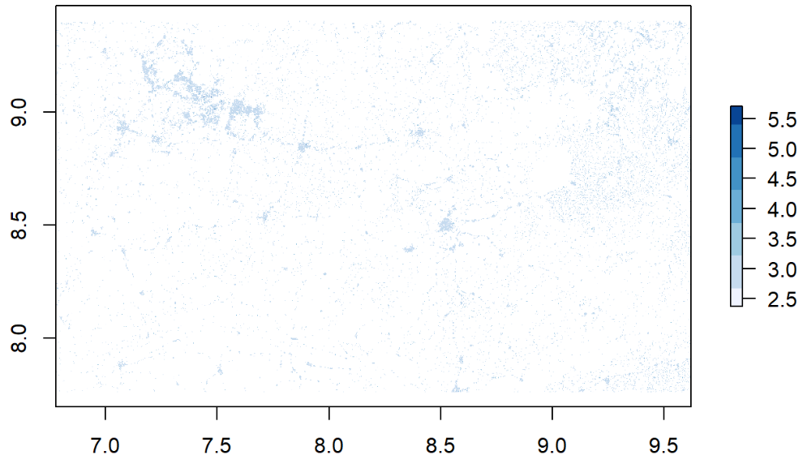
We see that higher uncertainty can be observed on the outskirt of denser settlement. This is often the case due to the rapid expansion of settlement extent that is difficult to capture.
6.5.15 Aggregating prediction
Gridded populations are great to visualise the spatial distribution of population across an area. But often we want to get aggregates, that is a population estimate for a custom area such as a city or the catchment area of a hospital.
Let’s look at an example. We manually drew the extent of one city in our study area.
Disclaimer: the extents are not the official extent
tmap_options(check.and.fix = TRUE)
city <- st_read(paste0(wd_path, 'study_city.gpkg'), quiet=T)
names(mean_r) <- 'Gridded population'
tmap_mode('view')
tm_shape(city)+
tm_borders()+
tm_shape(mean_r)+
tm_raster()+
tm_basemap('Esri.WorldGrayCanvas')Getting the mean population prediction for the city corresponds to computing zonal statistic on the gridded population, that is summing up all the grid cells contained in the city.
mean_city <- extract(mean_r, city, fun=sum, na.rm=TRUE, df=TRUE)
mean_city %>%
mutate(features = 'city', .after=ID) %>%
rename("Mean population prediction"=Gridded.population) %>%
kbl(caption='Mean population prediction for the city computed with the gridded population') %>% kable_minimal(full_width = F)Getting the uncertainty for that estimate is more complicated. Indeed we can’t sum up uncertainty of the grid cell to retrieve the uncertainty of the aggregate because credible intervals are based on quantile computation, and quantiles can’t be summed.
We need thus to reconstruct the full population prediction distribution for the city by aggregating all grid-cells population prediction distribution.
We first convert the city polygon to a raster with same extent as the gridded population. This raster is made of 1s for grid cells inside the city extent and 0s for grid cells outside the city.
We convert the city raster to an array and join to raster_df to get
the grid cell id. We filter out the grid cells that belongs to the city
and then merge it with the predictions:
city_prediction <- raster_df %>%
# select grid cell id from raster df
dplyr::select(gridcell_id) %>%
# add city dummy
mutate(city = city_r[]) %>%
# keep grid cells inside the city
filter(city==1) %>%
# join predictions
left_join(predictions) %>%
# keep predictions
dplyr::select(starts_with('V'))city_prediction contains all the grid cells comprised in the city with
the corresponding full population prediction distribution.
We first sum the predictions for every grid cells at each iteration.
city_prediction becomes an array of size 2000 that contains thus the
2000 population totals for the city.
We can then derive meaningful statistics from the distribution of population total for the city.
city_prediction_stats <- city_prediction %>%
summarise(
"Mean population" = round(mean(value)),
"Upper bound" = round(quantile(value, p=0.975)),
'Lower bound' = round(quantile(value, p=0.025)))
ggplot(city_prediction, aes(x=value))+
geom_density(size=1, color='orange')+
theme_minimal()+
theme(axis.title.y=element_blank(),
axis.text.y=element_blank(),
axis.ticks.y=element_blank())+
labs(y='', x='Predicted population for the city')+
annotate("segment",x=city_prediction_stats$`Mean population`,
xend=city_prediction_stats$`Mean population`, y=0, yend=0.000005, size=1)+
annotate('text',x=city_prediction_stats$`Mean population`+5000, y=0.0000012, hjust = 0, fontface =2,
label=paste0('Mean prediction: \n', city_prediction_stats$`Mean population`, ' people'))+
annotate("segment",x=city_prediction_stats$`Upper bound`,
xend=city_prediction_stats$`Upper bound`, y=0, yend=0.000005)+
annotate('text',x=city_prediction_stats$`Upper bound`+5000, y=0.000001, hjust = 0,
label=paste0('97.5% prediction \nbound: \n', city_prediction_stats$`Upper bound`, ' people'))+
annotate("segment",x=city_prediction_stats$`Lower bound`,
xend=city_prediction_stats$`Lower bound`, y=0, yend=0.000005)+
annotate('text',x=city_prediction_stats$`Lower bound`+5000, y=0.000001, hjust = 0,
label=paste0('2.5% prediction \nbound: \n', city_prediction_stats$`Lower bound`, ' people'))(#fig:city_prediction)Full distribution of the predicted population total for the city
Figure @ref(fig:city_prediction) shows that the mean prediction matches the one computed with the gridded population raster. Furthermore we see that our model produces predictions with a very wide credible interval.
Having the full distribution can answer questions such as “what is the probability that there is more than xx people in the area” or “with a 95% certainty, what is the maximum number of people in that area?”
6.6 Contribution
This tutorial was written by Edith Darin from WorldPop, University of Southampton and Douglas Leasure from Leverhulme Centre for Demographic Science, University of Oxford, with supervision from Andrew Tatem, WorldPop, University of Southampton. Funding for the work was provided by the United Nations Population Fund (UNFPA), the Leverhulme Trust (RC-2018-003) and ESRC Impact Acceleration Account at the University of Oxford (2209-KEA-835).
6.7 Suggested citation
Darin E, Leasure DR, Tatem AJ. 2023. Statistical population modelling for census support. United Nations Population Fund (UNFPA), Leverhulme Centre for Demographic Science, University of Oxford, and WorldPop, University of Southampton. https://wpgp.github.io/bottom-up-tutorial/, doi:10.5281/zenodo.7945266